Halk Sağlığı Akademisi İçin Moodle'da Ders İçeriği Hazırlama Rehberi
Eğiticiler İçin Uygulama Kılavuzu
Güncellenme tarihi: 28 Ekim 2026
Bölüm 0 · Giriş
0.1 Roller ve Görev Tanımları
Ders içeriği hazırlamadaki temel görevler aşağıdaki tabloda yer almaktadır.
Rol
Tanım
Temel Görevler
Eğitici
Kursun sorumlusu eğitici
Öğrenme hedeflerini, sunumu, ders videosunu ve soruları hazırlar. İçerikleri Moodle'daki kursuna ekler. Ders videosunu bilişim koordinatörüne iletir. Yayından önce dersi katılımcı görünümünde denetler.
Moodle ders koordinatörü
Her kurs için tanımlı Halk Sağlığı Akademisi temsilcisi
Kursun takvimini ve ders düzenini izler. Katılımcı kayıtlarını ve geri bildirim formunu düzenler. Yayından önce kursu denetler ve eğiticiyle iletişimi yürütür.
Ders videolarını kurumun YouTube kanalına yükler ve derslere gömer. Moodle sitesinin teknik işleyişini, hesap ve erişim sorunlarını izler. Deneme kursunu ve rehberi günceller.
Her kursun Moodle ders koordinatörü eğiticilere ayrıca bildirilir.
0.2 Rehberin Kullanımı
Rehberin bölümleri, bir dersin hazırlık sırasını izlemektedir. Aşağıdaki tablo ile bu sıra incelenebilir ve ilgili bölümlere doğrudan erişilebilir.
Uygulama Standardı · Ders içerikleri, yayın tarihinden en geç 7 gün önce Moodle'a eklenmelidir. Ders videosu, yükleme için yeterli süre kalacak biçimde iletilmelidir.
0.3 Ders Paketinin Temel Bileşenleri
Her ders kapsamında aşağıdaki materyaller hazırlanmalıdır. Bu bölüm, hazırlık sürecinde kontrol listesi olarak kullanılabilir.
Öğrenim hedefleri: Kısa, öz ve ortak ifadeyle yapılandırılmış maddeler (ör. Bu dersin sonunda katılımcı … tanımlar.).
Ders videosu: MP4 biçiminde kaydedilmiş video dosyası.
Video başlığı ve kısa tanıtım metni (1-2 cümle).
Sunum dosyası: PDF biçimine dönüştürülmüş ders slaytları.
Kaynak ve okuma listesi: Web bağlantıları veya PDF belgeleri.
Değerlendirme soruları: Doğru yanıt anahtarı ve çözüm açıklamalarını içeren soru metni.
Önemli Uyarı · Okuma listesine yalnızca telif ve paylaşım izni bulunan tam metinler yüklenmelidir. Diğer kaynaklar için erişim bağlantısı paylaşılmalıdır.
Uygulama Önerisi · Standart dosya adlandırma kuralları Bölüm 2.3'te açıklanmıştır.
Bölüm 1 · Moodle'da Ders Yapısı ve İşleyişi
1.1 Standart Ders Akışı ve Düzeni
Her ders ayrı bir bölüm olarak yapılandırılır ve içerikleri standart olarak kursun içerisinde sunulur. Bu düzen, katılımcıların materyallere erişimini ve materyalleri anlamalarını kolaylaştırmak için tasarlanmıştır.
Öğrenim hedefleriSayfaHazırlayan: Eğitici
Ders videosuSayfa (YouTube Gömülü Video)Hazırlayan: Eğitici · Ekleyen: Bilişim koordinatörü
Kaynaklar ve okumalarURL ya da KlasörHazırlayan: Eğitici
Ders sonu değerlendirme sınavıSınavSoruları hazırlayan: Eğitici
Ders değerlendirme ve geri bildirim formuAnket (Geri bildirim)Ekleyen: Moodle ders koordinatörü
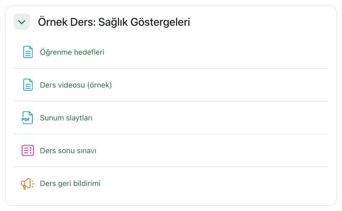
Katılımcı Görünümündeki Sıra1
Katılımcı Görünümündeki Sıra
Uygulama Önerisi · Uygulama kursunda (Deneme Eğitimciler İçin) yer alan Örnek Ders: Sağlık Göstergeleri[1] bölümü, standart ders düzeni örneği olarak incelenebilir.
Moodle'da her materyal türü için farklı bir kaynak veya etkinlik aracı bulunur. Doğru aracın seçilmesi, içeriklere erişimi kolaylaştırır.
İçerik / Materyal Türü
Önerilen Moodle Aracı
Katılımcı Ekranındaki Görünüm
Tekil belge (sunum dosyası, makale vb.)
Dosya
Belge doğrudan tarayıcıda açılır veya cihaza indirilir.
Kısa metin veya gömülü YouTube videosu
Sayfa
Doğrudan Moodle içinde açılan düzenli içerik sayfası.
Çoklu belge grubu (ek okumalar, veri setleri vb.)
Klasör
Toplu veya tek tek indirilebilen dosyalar dizini.
Dış web sayfası veya çevrim içi makale bağlantısı
URL
Bağlantı, Görünüm ayarına göre aynı sekmede ya da açılır pencerede açılır.
Alt başlıklara ayrılmış kapsamlı ders metni
Kitap
İçindekiler dizinine sahip, çok sayfalı ders metni.
Soru ve etkileşim öğeleri eklenmiş ders videosu
H5P
Video belirlenen anlarda durur ve ekrana soru gelir.
Uygulama Standardı · Ders slaytları Dosya kaynağı kullanılarak PDF biçiminde yüklenmelidir.
Önemli Uyarı · Video dosyaları doğrudan Moodle'a yüklenmemelidir. Kayıtlar YouTube'a yüklenerek Sayfa kaynağı içine gömülür.
1.3 Görev ve Sorumluluk Dağılımı
Süreç / Görev
Eğitici
Moodle Ders Koordinatörü
Bilişim Koordinatörü
Öğrenim hedeflerinin, sunumların ve değerlendirme sorularının hazırlanması
Sorumlu
—
—
Ders anlatım videosunun kaydedilmesi
Sorumlu
—
Teknik destek sağlar
Ders videosunun YouTube kanalına yüklenmesi ve derse gömülmesi
—
—
Sorumlu
Ders materyallerinin Moodle'a eklenmesi
Sorumlu
İstisnai durumlarda destek olur
—
Ders değerlendirme ve geri bildirim formunun tanımlanması
—
Sorumlu
—
Katılımcı sorularının yanıtlanması
Sorumlu
İletişimi koordine eder
—
Katılımcıların kursa tanımlanması
—
Sorumlu (veya akademi yöneticisi)
—
Kullanıcı hesabı, erişim yetkisi ve altyapı sorunları
—
İletir ve takip eder
Çözümler ya da site yönetimine iletir
1.4 Ders Videolarının Yayımlanması
Ders videoları doğrudan Moodle'a değil, kurumun YouTube kanalına yüklenir. Bu uygulamanın üç temel gerekçesi vardır.
Moodle dosya yükleme sınırı en çok 256 MB'tır. Uzun ders videoları genellikle bu sınırı aşar.
YouTube, görüntü kalitesini internet hızına göre uyarlar. Böylece düşük hızlarda da video kesintisiz izlenir.
Videolar Moodle sunucusunda ek yük oluşturmaz. Çok sayıda katılımcı aynı anda ders izleyebilir.
YouTube Gizlilik ve Görünürlük Ayarları
Görünürlük Ayarı
Erişim Yetkisi
Moodle'da Görüntülenme Durumu
Herkese açık
Herkes izleyebilir. Video genel arama sonuçlarında listelenir.
Oynatılır; ancak kurumsal ders videoları için uygun değildir.
Liste dışı
Yalnızca bağlantıya sahip kişiler izleyebilir. Video aramada listelenmez.
Oynatılır. Tüm ders videoları bu ayarla yüklenmelidir.
Gizli
Yalnızca yetkilendirilen Google hesapları izleyebilir.
Oynatılamaz; katılımcı ekranında hata iletisi görüntülenir.
Önemli Uyarı · Liste dışı videolar tümüyle gizli değildir. Bağlantı paylaşılırsa üçüncü kişilerce izlenebilir. Hasta görüntüsü veya kişisel veri içeren kayıtlar yüklenmemelidir.
Bu bölümde, ders sunumunun ekranda okunaklı ve erişilebilir biçimde hazırlanması ve PDF biçimine dönüştürülmesi açıklanmaktadır.
Uygulama Standardı · Ders slaytları 16:9 oranında hazırlanmalı ve PDF biçiminde iletilmelidir (bkz. Bölüm 3.2).
Sunum Hazırlık Kontrol Listesi
Slayt boyutu 16:9 (geniş ekran) olarak ayarlanmıştır.
Her slayt tek bir ana fikre odaklanır.
Metin ile zemin arasında yeterli renk karşıtlığı vardır.
Bilgi taşıyan görsellere alternatif metin yazılmıştır.
Alıntılanan görsel, tablo ve verilerin kaynağı slaytta belirtilmiştir.
Telif ve paylaşım izni bulunmayan görsel kullanılmamıştır (bkz. Bölüm 0.3).
Slaytlarda hasta görüntüsü ya da kişisel veri bulunmamaktadır.
Dosya, adlandırma kalıbına uygun biçimde adlandırılmıştır (bkz. Bölüm 2.3).
PDF Biçimine Dönüştürme İçin Karar Tablosu
Program
Menü Yolu
Açıklama
PowerPoint (Windows)
Dosya · Dışarı Aktar · PDF/XPS Belgesi Oluştur · PDF/XPS Oluştur
Açılan pencerede Standart bırakılır ve Yayımla seçilir.
PowerPoint (Mac)
Dosya · Dışarı Aktar · Dosya Biçimi · PDF
Kısım B'de adım adım anlatılır.
Google Slaytlar
Dosya · İndir ve ardından PDF seçeneği
PDF dosyası bilgisayara indirilir.
Keynote
Dosya · Şuraya Aktar · PDF
Görüntü kalitesi aynı pencerede seçilebilir.
A. Slayt Düzeninin ve Erişilebilirliğin Ayarlanması
Adım
Uygulama Adımı / İşlem
Sistem Yanıtı / Ekran Görünümü
01
Tasarım sekmesinde Slayt Boyutu, ardından Geniş ekran (16:9) seçilir.
Slaytlar 16:9 oranına geçer.
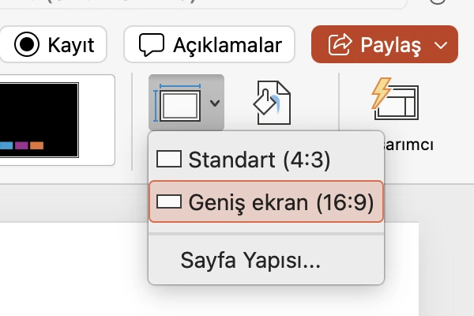
01 · Slayt Boyutu01 · Geniş ekran (16:9)12
01 · Slayt Boyutu
01 · Geniş ekran (16:9)
02
Başlık ve metin, slaytın kenarlarından yeterli boşluk bırakılarak yerleştirilir.
Kenarlara yakın metinler ekranda kesilmez.
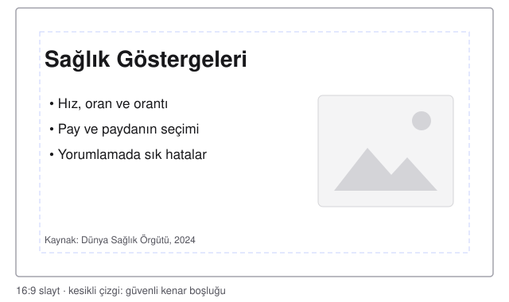
Kısa başlıkAz sayıda maddeAlternatif metinGörsel ve veri kaynağı1234
Kısa başlık
Az sayıda madde
Alternatif metin
Görsel ve veri kaynağı
Uygulama Önerisi · Başlıklarda en az 32 punto, metinde en az 20 punto kullanılabilir. Bu boyutlar küçük ekranlarda da okunabilirlik sağlar.
03
Gözden Geçir sekmesinde Erişilebilirliği Denetle seçilir.
Erişilebilirlik sekmesi ve Erişilebilirlik Yardımcısı bölmesi açılır. Bölmede düzeltilmesi önerilen öğeler listelenir.
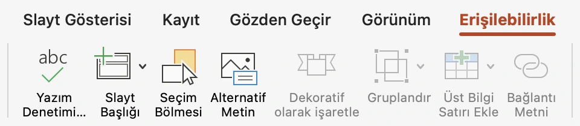
03 · Gözden GeçirAçılan sekmeAlternatif Metin123
03 · Gözden Geçir
Açılan sekme
Alternatif Metin
Uygulama Önerisi · Sunumun erişilebilirliği bu ekrandan denetlenebilir. Bölmede listelenen öneriler, sunum tamamlanmadan önce gözden geçirilebilir.
Uygulama Önerisi · Bilgi taşıyan görsellere Alternatif Metin düğmesiyle kısa bir açıklama eklenebilir. Ayrıntılı bilgi için Microsoft Destek: Alternatif metin ekleme[1] sayfası incelenebilir.
B. Sunumun PDF Biçiminde Kaydedilmesi
Adım
Uygulama Adımı / İşlem
Sistem Yanıtı / Ekran Görünümü
04
Dosya menüsünden Dışarı Aktar seçilir.
Dışarı aktarma penceresi açılır.
05
Dosya adı yazılır ve kayıt klasörü seçilir.
Dosya adı, adlandırma kalıbına uygun olmalıdır (bkz. Bölüm 2.3).
06
Dosya Biçimi listesinde PDF seçilir.
Listenin altında iki PDF seçeneği görüntülenir.
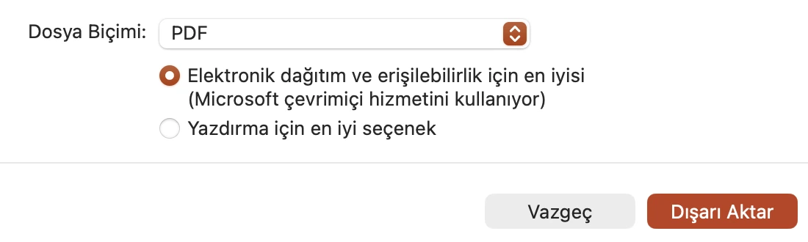
06 · Dosya Biçimi07 · Erişilebilir PDF07 · Dışarı Aktar123
06 · Dosya Biçimi
07 · Erişilebilir PDF
07 · Dışarı Aktar
07
Elektronik dağıtım ve erişilebilirlik için en iyisi seçili bırakılır. Dışarı Aktar düğmesi seçilir.
PDF dosyası seçilen klasöre kaydedilir.
Uygulama Önerisi · Erişilebilir PDF seçeneği Microsoft çevrimiçi hizmetini kullanır. İnternet bağlantısı yoksa Yazdırma için en iyi seçenek seçilebilir.
Uygulama Önerisi · PDF dosyası çok büyükse görseller Dosya · Resimleri Sıkıştır ile küçültülebilir (bkz. Bölüm 3.2).
Önemli Uyarı · Animasyonlar ve slayt geçişleri PDF biçimine aktarılmaz. Aşamalı gösterilen içerik ayrı slaytlara bölünmelidir.
Olası Sorunlar ve Çözüm Yöntemleri
Karşılaşılan Durum veya Katılımcı Bildirimi
Olası Teknik Neden
Çözüm Yöntemi
PDF'te yazı tipleri farklı görünüyor.
Sunumda yaygın olmayan bir yazı tipi kullanılmıştır.
Yaygın bir yazı tipi (ör. Calibri, Arial) seçilir ve PDF yeniden oluşturulur.
PDF dosyası çok büyük.
Sunumda yüksek çözünürlüklü görseller vardır.
Dosya · Resimleri Sıkıştır uygulanır ve PDF yeniden oluşturulur (bkz. Bölüm 3.2).
Animasyonla açılan maddeler PDF'te üst üste görünüyor.
Animasyonlar PDF biçimine aktarılmaz.
Aşamalar ayrı slaytlara bölünür ve PDF yeniden oluşturulur.
Sunuma eklenen video PDF'te oynatılmıyor.
PDF biçimi video içermez.
Video ayrı bir dosya olarak iletilir (bkz. Bölüm 2.3).
Bu bölümde, ders anlatımının bilgisayarda video olarak kaydedilmesi açıklanmaktadır. Kısım A PowerPoint kaydını, Kısım B Zoom ile yerel kaydı anlatır.
PowerPoint adımları Mac sürümüne göre yazılmıştır. Windows'taki farklar notlarda belirtilir.
Uygulama Standardı · Video dosyası Moodle'a yüklenmemelidir. Video, bilişim koordinatörüne iletilir (bkz. Bölüm 2.3 ve Bölüm 1.4).
Önerilen Teknik Ayarlar
Ayar
Önerilen Değer
Dosya biçimi
MP4 (H.264)
Çözünürlük
1920 × 1080 (Tam HD) ya da 1280 × 720 (HD)
Ses
Kulaklık mikrofonu ya da harici mikrofon; sessiz bir ortam
Süre
Sınır yoktur. Uzun dersler konu başlıklarına göre bölümlenebilir.
Görüntü
Arka planda kişisel bilgi, hasta verisi ya da ekran bildirimi görünmemelidir.
Video Dosyasının Küçültülmesi
Video Moodle'a yüklenmediği için dosya boyutu sınırı yoktur. Büyük dosyalar yalnızca paylaşımı yavaşlatır; gerekirse aşağıdaki yollarla küçültülebilir.
Yol
Açıklama
PowerPoint
Video dışarı aktarılırken Kalite listesinde HD (720p) seçilir.
HandBrake (ücretsiz, Windows ve Mac)
Video, 720p ya da 1080p hazır ayarlarından biriyle yeniden kodlanır. Görüntü kalitesi korunurken dosya boyutu belirgin biçimde küçülür. Program, HandBrake resmî sitesinden[1] ücretsiz indirilebilir.
QuickTime Player (Mac)
Video, dışa aktarma sırasında daha düşük bir çözünürlük seçilerek yeniden kaydedilir.
Kayıt Aracı Seçimi İçin Karar Tablosu
Kayıt Aracı
Uygun Olduğu Durum
Çıktı
PowerPoint kaydı
Anlatım slaytlar üzerinden yapılacaksa; kamera isteğe bağlıdır
MP4 video (Kısım A)
Keynote
Sunum Mac bilgisayarda Keynote ile hazırlandıysa
Video olarak dışa aktarılan sunum
Zoom yerel kaydı
Slaytların yanında başka programlar da gösterilecekse
MP4 video (Kısım B)
Moodle içi kısa kayıt
En çok 2 dakikalık duyuru ya da geri bildirim kaydedilecekse
2.3 Ders Videosunun Bilişim Koordinatörüne İletilmesi
Bu bölümde, ders videosunun adlandırılması ve paylaşım bağlantısıyla bilişim koordinatörüne iletilmesi açıklanmaktadır. Bilişim koordinatörü videoyu kurumun YouTube kanalına yükler ve derse gömer. Bölümün sonunda, videonun bilişim koordinatörüne iletilmesi için hazır bir e-posta kalıbı da yer almaktadır.
Uygulama Standardı · Büyük video dosyaları paylaşım bağlantısıyla iletilmelidir. E-posta ekinin boyut sınırını aşmayan küçük video dosyaları e-postayla da gönderilebilir. Paylaşım bağlantısında erişim izni tanımlanmalıdır (bkz. Kısım B). Video, yükleme ve gömme için yeterli süre (7–10 gün) kalacak biçimde gönderilmelidir.
Paylaşım Hizmeti Seçimi İçin Karar Tablosu
Hizmet
Uygun Olduğu Durum
Dikkat Edilecek Nokta
Google Drive
Kişisel ya da kurumsal Google hesabı varsa
Genel erişim, bağlantıya sahip olanlara açılmalıdır.
OneDrive
Kurumsal Microsoft 365 hesabı varsa
Kurum hesaplarında dışarıyla paylaşım kapalı olabilir.
WeTransfer
Hesap açmadan tek seferlik gönderim gerekiyorsa
Bağlantının geçerlilik süresi sınırlıdır.
A. Dosyanın Adlandırılması
Adım
Uygulama Adımı / İşlem
Sistem Yanıtı / Ekran Görünümü
01
Video dosyasının adı Kurs_Hafta_Soyad_Tür kalıbıyla yeniden yazılır.
01 · Öğrenme hedefi02 · Soru kökü03 · Tek en iyi yanıt04 · Çeldiriciler1234
01 · Öğrenme hedefi
02 · Soru kökü
03 · Tek en iyi yanıt
04 · Çeldiriciler
02
Soru kökü, seçeneklere bakmadan yanıtlanabilecek açık bir soru olarak yazılır.
Kök, seçenekler okunmadan anlaşılır.
03
Tek bir en iyi yanıt yazılır.
Doğru yanıt, şablonda ya da metin dosyasında işaretlenir.
04
Üç ya da dört çeldirici yazılır. Çeldiriciler akla yatkın ve doğru yanıtla benzer uzunlukta olmalıdır.
Seçenekler aynı türden ifadelerden oluşur.
Uygulama Önerisi · Çeldiriciler, katılımcıların sık yaptığı hatalardan seçilebilir. Örneğin paydayı soran bir soruda pay bir çeldirici olarak yazılabilir.
05
Soru, aşağıdaki kontrol listesine göre denetlenir.
Belirsiz ya da ipucu veren ifadeler düzeltilir.
Uygulama Önerisi · Soru yazımına ilişkin ayrıntılı ilkeler için NBME Item-Writing Guide[1] (İngilizce) incelenebilir.
Soru Yazım Kontrol Listesi
Soru kökü tek başına anlaşılır bir soru içermektedir.
Seçeneklerden yalnızca biri en iyi yanıttır.
Çeldiriciler akla yatkın, aynı türden ve benzer uzunluktadır.
"Hepsi" ve "Hiçbiri" seçenekleri kullanılmamıştır.
Olumsuz kök kullanılmamıştır. Kullanıldıysa olumsuz sözcük vurgulanmıştır.
Doğru yanıtı ele veren dil bilgisi uyumu ya da sözcük tekrarı yoktur.
"Her zaman" ve "asla" gibi kesin ifadeler kullanılmamıştır.
Seçenekler mantıklı bir sırayla (ör. sayısal büyüklüğe göre) dizilmiştir.
Soru, derste işlenen bir öğrenme hedefine bağlıdır.
B. Soruların Moodle'a Eklenmesi
Adım
Uygulama Adımı / İşlem
Sistem Yanıtı / Ekran Görünümü
06
Sorular, sınavın soru ekleme ekranında tek tek yazılır (Bölüm 3.5, Kısım B).
Her soru, formda görülerek denetlenir.
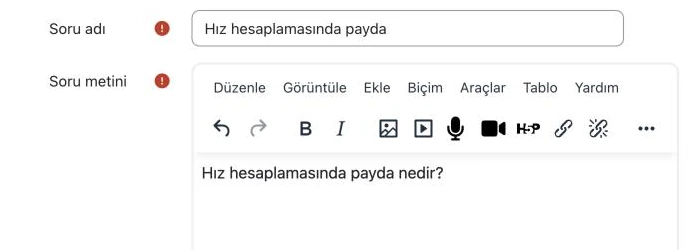
06 · Soru adı06 · Soru metini12
06 · Soru adı
06 · Soru metini
07
Çok sayıda çoktan seçmeli soru varsa sorular Aiken biçiminde bir metin dosyasına yazılabilir.
Dosya, Moodle'ın içe aktarma ekranında tek işlemle aktarılır (Bölüm 3.5, Kısım C).
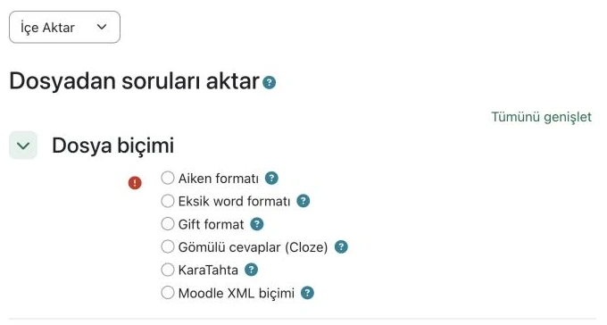
07 · Aiken biçimiGIFT biçimi12
07 · Aiken biçimi
GIFT biçimi
Önemli Uyarı · Metin dosyasıyla yapılan toplu aktarımda görseller taşınmaz. Görsel içeren sorularda görsel ayrı bir dosya olarak iletilmelidir.
Aiken ve GIFT Biçimleri
Aiken ve GIFT, soruların düz metin olarak yazıldığı ve Moodle'ın okuyabildiği iki yazım biçimidir. Bu biçimlerle çok sayıda soru tek dosyayla aktarılır. Kullanımları isteğe bağlıdır.
Biçim
Ne İşe Yarar
Ne Zaman Kullanılır
Aiken
Yalnızca tek doğru yanıtlı çoktan seçmeli soruları aktarır. Yazım kuralları en basit biçimdir.
Soru metinleri ve seçenekleri hazırsa
GIFT
Çoktan seçmeli, doğru/yanlış ve kısa yanıtlı soruları geri bildirimleriyle birlikte aktarır.
Sorularda geri bildirim de yer alacaksa
Aiken biçiminde her soru aynı düzende yazılır: önce soru kökü, ardından harfli seçenekler, en sonda doğru yanıtı gösteren ANSWER: satırı. Sorular arasında bir boş satır bırakılır.
Aiken biçiminde bir soru
Hız hesaplamasında payda nedir?
A. Risk altındaki nüfus
B. Olgu sayısı
C. Toplam ölüm sayısı
D. Örneklem büyüklüğü
ANSWER: A
Dosya, Windows'ta Not Defteri ile, Mac'te Metin Düzenleyici ile düz metin (.txt) olarak ve UTF-8 kodlamasıyla kaydedilir. Mac'te belge kaydedilmeden önce düz metne dönüştürülmelidir.
Uygulama Önerisi · İstisnai durumlarda sorular Soru Hazırlama Şablonu (Word) ile hazırlanıp Moodle ders koordinatörüne iletilebilir.
Olası Sorunlar ve Çözüm Yöntemleri
Karşılaşılan Durum veya Katılımcı Bildirimi
Olası Teknik Neden
Çözüm Yöntemi
Aiken aktarımında biçim hatası görüntüleniyor.
Seçenek harfleri ya da ANSWER: satırı kurala uygun yazılmamıştır.
Dosya, Bölüm 3.5 içindeki Aiken örneğiyle karşılaştırılır.
Sınavda doğru yanıt yanlış seçeneğe verilmiş görünüyor.
Soru formunda 100% notu yanlış seçeneğe verilmiştir.
Soru düzenlenir ve 100% notu doğru seçeneğe verilir (bkz. Bölüm 3.5).
Katılımcıların çoğu soruyu kolayca yanıtlıyor.
Çeldiriciler akla yatkın değildir ya da doğru yanıt belirgin biçimde daha uzundur.
Çeldiriciler sık yapılan hatalardan seçilir. Seçeneklerin uzunlukları eşitlenir.
Aktarılan sorularda Türkçe karakterler bozuk görünüyor.
Dosya, metin düzenleyicide UTF-8 kodlamasıyla yeniden kaydedilir.
https://www.nbme.org/educators/item-writing-guide
Bölüm 3 · Moodle'da Ders İçeriğinin Yapılandırılması
3.0 İlk Dersin Oluşturulmasına Yönelik Uygulama
Bu uygulamada, bir haftalık ders bölümü deneme kursunda baştan sona kurulur. Her adım, ayrıntılı açıklamanın yer aldığı bölüme bağlantı verir.
Uygulamanın sonunda bölüm, Bölüm 1.1'deki standart ders akışına uygun hâle gelir.
Uygulama Standardı · Uygulama yalnızca bilişim koordinatörünün belirlediği deneme kursunda yapılmalıdır. Gerçek kurslarda yapılan denemeler katılımcılara görünebilir.
Başlamadan Önce Hazırlanacaklar
Ders slaytları PDF biçiminde kaydedilmiştir.
Ders videosu YouTube'a liste dışı olarak yüklenmiş ve bağlantısı alınmıştır (Bölüm 1.4).
Ek okumaların bağlantıları ya da paylaşım izni bulunan PDF dosyaları hazırdır.
Ders sonu sınavının soruları ve doğru yanıtları metin olarak hazırlanmıştır.
A. Bölümün Hazırlanması
Adım
Uygulama Adımı / İşlem
Sistem Yanıtı / Ekran Görünümü
01
Deneme kursunun sayfasında Düzenleme modu anahtarı açılır.
Bölümlerde düzenleme simgeleri ve + düğmeleri görüntülenir.
02
Haftanın bölüm başlığı ve kısa açıklaması düzenlenir (Bölüm 3.1).
Bölüm, tarih aralığı yerine ders adıyla görüntülenir.
03
Öğrenme hedefleri bir Sayfa kaynağına madde madde yazılır. Sayfa formu Bölüm 3.3'teki gibi açılır.
Öğrenme hedefleri sayfası bölümün ilk öğesi olarak yer alır.
B. Ders İçeriklerinin Eklenmesi
Adım
Uygulama Adımı / İşlem
Sistem Yanıtı / Ekran Görünümü
04
Örnek bir YouTube videosu yeni bir Sayfa kaynağına gömülür (Bölüm 3.3). Gerçek kurslarda ders videolarını bilişim koordinatörü gömer.
Video, sayfa içindeki oynatıcıda izlenebilir.
05
Slaytlar Dosya kaynağıyla PDF olarak yüklenir (Bölüm 3.2).
Slaytlar PDF simgesiyle bölümde yer alır.
06
Ek okumalar URL ya da Klasör kaynağıyla eklenir (Bölüm 3.4).
Okumalar, bağlantı ya da klasör simgesiyle listelenir.
07
Ders sonu sınavı oluşturulur ve sorular eklenir (Bölüm 3.5).
Sınav, soru listesiyle birlikte bölümde yer alır.
08
Gerekirse sınav, video sayfasının tamamlanmasına bağlanır (Bölüm 3.8).
Sınavın altında kısıtlama bilgisi görüntülenir.
C. Bölümün Denetlenmesi
Adım
Uygulama Adımı / İşlem
Sistem Yanıtı / Ekran Görünümü
09
Bölüm, Öğrenci rolüne geçilerek katılımcı görünümünde denetlenir (Bölüm 3.9).
İçerikler, katılımcının göreceği sırayla ve biçimde görüntülenir.
Denetimde bulunan eksikler giderilir. Bölümün hazır olduğu Moodle ders koordinatörüne bildirilir.
Bölüm, gerçek kursa aktarılmaya hazır hâle gelir.
Uygulama Önerisi · İçeriklerin sırası, öğenin üç nokta menüsündeki Taşı seçeneğiyle değiştirilebilir.
Olası Sorunlar ve Çözüm Yöntemleri
Karşılaşılan Durum veya Katılımcı Bildirimi
Olası Teknik Neden
Çözüm Yöntemi
Bölümde + düğmeleri görünmüyor.
Düzenleme modu kapalıdır.
Sayfanın sağ üstündeki Düzenleme modu anahtarı açılır.
Eklenen içerik yanlış bölümde yer alıyor.
İçerik başka bir bölümün + düğmesiyle eklenmiştir.
Öğenin üç nokta menüsünden Taşı seçilir ve doğru bölüm seçilir.
Katılımcı görünümünde bazı içerikler eksik.
İçerik gizlidir ya da erişim koşuluna bağlıdır.
Görünürlük ve erişim koşulları denetlenir (bkz. Bölüm 3.8).
Video sayfası açılıyor ancak video oynatılmıyor.
YouTube videosu Gizli olarak ayarlanmıştır.
Videonun görünürlüğü Liste dışı olarak değiştirilir (bkz. Bölüm 1.4).
3.1 Ders Bölüm Başlığı ve Açıklamasının Düzenlenmesi
Uygulama Önerisi · Bölüm başlığında dersin haftası ve konusu birlikte belirtilebilir (ör. 3. Hafta · Sağlık Göstergeleri).
Bu bölümde, ders bölümünün başlığının ve açıklamasının düzenlenmesi açıklanmaktadır. Haftalık biçimdeki kurslarda bölümler varsayılan olarak tarih aralığıyla adlandırılır.
Bölüm başlığı iki yoldan değiştirilebilir: başlığın yanındaki kalem simgesiyle ya da bölüm ayarları formuyla. Açıklama yalnızca ayarlar formundan eklenir.
Yöntem Seçimi İçin Karar Tablosu
Mevcut Durum
İzlenecek Yöntem
Çıktı / Sonuç
Yalnızca bölüm başlığı değiştirilecekse
Kalem simgesi kullanılır (Kısım A).
Başlık kurs sayfasında hemen güncellenir.
Başlıkla birlikte açıklama da eklenecekse
Bölüm ayarları formu kullanılır (Kısım B).
Açıklama, bölüm başlığının altında görüntülenir.
A. Başlığın Kalem Simgesiyle Değiştirilmesi
Adım
Uygulama Adımı / İşlem
Sistem Yanıtı / Ekran Görünümü
01
Bölüm başlığının yanındaki kalem simgesi seçilir.
Başlık, düzenlenebilir bir alana dönüşür.
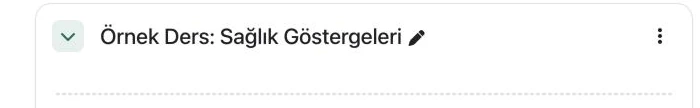
01 · Kalem simgesi1
01 · Kalem simgesi
02
Yeni başlık yazılır ve klavyedeki Enter tuşuyla onaylanır.
Yeni başlık kurs sayfasında görüntülenir.
B. Başlık ve Açıklamanın Ayarlar Formunda Düzenlenmesi
Adım
Uygulama Adımı / İşlem
Sistem Yanıtı / Ekran Görünümü
03
Bölüm başlığının sağındaki üç nokta menüsünden Bölümleri düzenle seçilir.
Bölüm ayarlarını düzenleyin formu açılır.
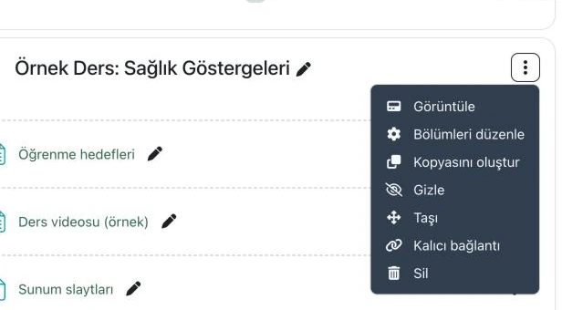
03 · Üç nokta menüsü03 · Bölümleri düzenle12
03 · Üç nokta menüsü
03 · Bölümleri düzenle
04
Bölüm adı alanına başlık, Açıklama alanına kısa bir tanıtım metni yazılır.
Yazılan metinler alanlarda görüntülenir.
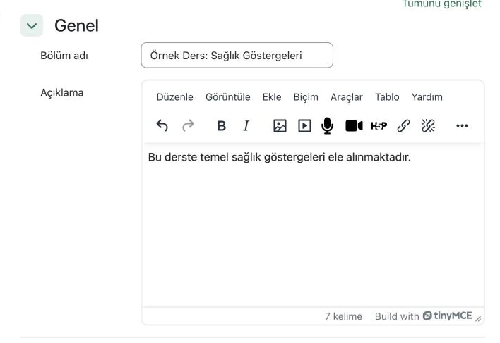
04 · Bölüm adı alanı04 · Açıklama alanı12
04 · Bölüm adı alanı
04 · Açıklama alanı
Uygulama Standardı · Açıklama kısa tutulmalıdır. Uzun metinler için Sayfa kaynağı kullanılmalıdır.
05
Formun altındaki Değişiklikleri kaydet düğmesi seçilir.
Açıklama, kurs sayfasında bölüm başlığının altında yer alır.
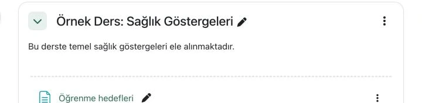
Sonuç · Bölüm açıklaması1
Sonuç · Bölüm açıklaması
Olası Sorunlar ve Çözüm Yöntemleri
Karşılaşılan Durum veya Katılımcı Bildirimi
Olası Teknik Neden
Çözüm Yöntemi
Kalemle değiştirilen başlık kaydedilmiyor.
Değişiklik Enter tuşuyla onaylanmadan başka bir alana geçilmiştir.
Başlık yeniden yazılır ve Enter tuşuyla onaylanır. Esc tuşu değişikliği iptal eder.
Açıklama kurs sayfasında görünmüyor.
Bölüm daraltılmış durumdadır.
Bölüm başlığının solundaki ok simgesiyle bölüm genişletilir.
Bölüm başlığı yerine yine tarih aralığı görünüyor.
Bölüm adı alanı boş bırakılmıştır.
Bölüm adı alanına bir başlık yazılarak form yeniden kaydedilir.
3.2 Sunum Slaytlarının PDF Biçiminde Yüklenmesi
Uygulama Önerisi · Slaytlar güncellendiğinde kaynağın Ayarları düzenle formunda eski dosya silinip yenisi yüklenebilir. Böylece kaynağın bağlantısı değişmez.
Bu bölümde, ders slaytlarının Dosya kaynağı ile PDF biçiminde yüklenmesi açıklanmaktadır. PDF biçimi, slaytların her cihazda aynı görünmesini sağlar.
Uygulama Standardı · PowerPoint (PPTX) dosyaları yüklenmeden önce PDF biçimine dönüştürülmelidir. Dönüştürme adımlarına Bölüm 2.1'de yer verilmiştir.
Görünüm Seçenekleri İçin Karar Tablosu
Görünüm Ayarı
Uygun Olduğu Durum
Katılımcının Gördüğü
Otomatik
Çoğu durum için uygundur.
Moodle, dosya türüne göre en uygun gösterimi seçer.
Göm
Slaytların ders sayfası içinde görüntülenmesi isteniyorsa
PDF, Moodle sayfasının içinde görüntülenir.
İndirmeye zorla
Dosyanın cihaza indirilmesi isteniyorsa
Dosya doğrudan indirilir.
Aç
Dosyanın Moodle dışında açılması isteniyorsa
PDF, tarayıcıda ayrı olarak açılır.
Açılır pencere
Açılır pencere engelleyicileri nedeniyle önerilmez.
PDF yeni bir pencerede açılır.
A. Dosya Kaynağının Eklenmesi
Adım
Uygulama Adımı / İşlem
Sistem Yanıtı / Ekran Görünümü
01
Ders bölümünün altındaki + düğmesi seçildikten sonra açılan menüden Etkinlik veya kaynak seçilir.
Yeni etkinlik veya kaynak ekle penceresi açılır.
02
Pencerede önce Kaynaklar sekmesi, ardından Dosya seçeneği seçilir.
Yeni Dosya formu açılır.
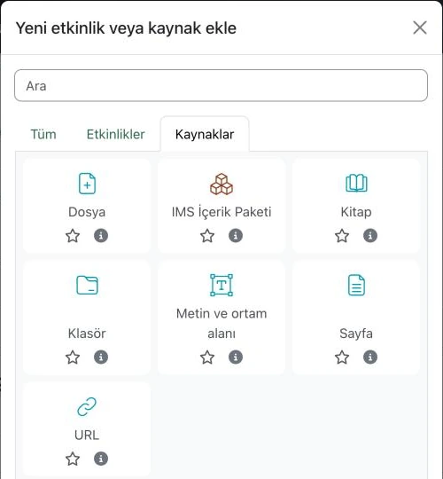
02 · Kaynaklar sekmesi02 · Dosya seçeneği12
02 · Kaynaklar sekmesi
02 · Dosya seçeneği
03
Adı alanına içeriği tanımlayan bir ad yazılır (ör. Ders 3 · Sunum Slaytları).
Bu ad kurs sayfasında görünür.
04
PDF dosyası bilgisayardan Dosyaları seç alanına sürüklenip bırakılır. Dosya, Ekle... düğmesiyle de seçilebilir.
Yükleme tamamlandığında dosya alanda görüntülenir.
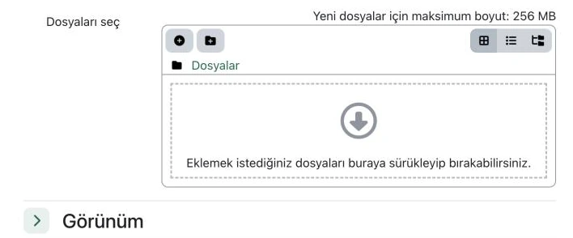
04 · Ekle... düğmesi04 · Sürükle-bırak alanı12
04 · Ekle... düğmesi
04 · Sürükle-bırak alanı
Uygulama Standardı · Dosya boyutu en çok 256 MB olmalıdır. Video dosyaları bu yolla yüklenmemelidir (bkz. Bölüm 3.3).
05
Yüklenen dosyanın alanda yer aldığı denetlenir.
PDF simgesi ve dosya adı görüntülenir.
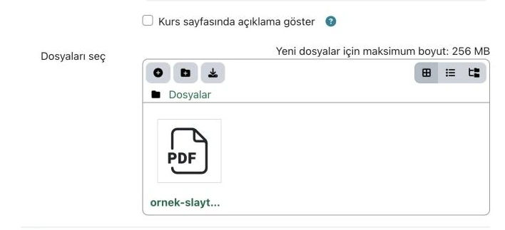
Sonuç · Yüklenen PDF1
Sonuç · Yüklenen PDF
B. Görünüm Ayarının Seçilmesi
Adım
Uygulama Adımı / İşlem
Sistem Yanıtı / Ekran Görünümü
06
Görünüm bölümü genişletilir ve Göster listesi uygun seçenek olarak ayarlanır.
Seçilen ayar, katılımcının dosyayı nasıl açacağını belirler.
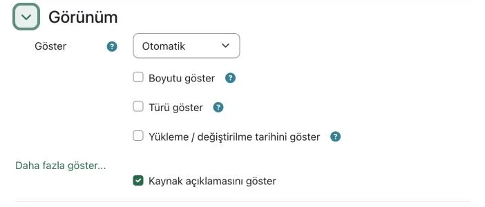
06 · Göster listesi1
06 · Göster listesi
07
Formun altındaki Kaydet ve derse dön düğmesi seçilir.
Dosya, PDF simgesiyle ders bölümünde yer alır.
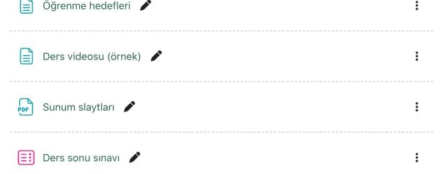
Sonuç · PDF kaynağı1
Sonuç · PDF kaynağı
Dosya Boyutunu Küçültme Yolları
Durum
Yöntem
Ayrıntı
Sunumdaki görseller büyük (PowerPoint, Windows)
Resim Biçimi · Resimleri Sıkıştır
Yalnızca bu resme uygula kutusunun işareti kaldırılırsa bütün görseller sıkıştırılır.
Sunumdaki görseller büyük (PowerPoint, Mac)
Dosya · Resimleri Sıkıştır
Bu dosyadaki tüm resimler seçilir.
PDF dosyası büyük (PowerPoint, Windows)
PDF/XPS Belgesi Oluştur penceresinde En küçük boyut
Görsel kalitesi bir miktar düşer; slaytlar denetlenmelidir.
Yüklenecek dosya video
Video Moodle'a yüklenmez.
Video bilişim koordinatörüne iletilir (bkz. Bölüm 2.3). Küçültme yolları Bölüm 2.2 içindedir.
Olası Sorunlar ve Çözüm Yöntemleri
Karşılaşılan Durum veya Katılımcı Bildirimi
Olası Teknik Neden
Çözüm Yöntemi
Dosya yüklenmiyor ve boyut uyarısı görüntüleniyor.
Dosya 256 MB sınırını aşmaktadır.
Görseller sıkıştırılır ya da PDF daha küçük boyutla yeniden oluşturulur (bkz. Dosya Boyutunu Küçültme Yolları).
Katılımcılar PDF yerine PowerPoint dosyası indiriyor.
PPTX dosyası PDF biçimine dönüştürülmeden yüklenmiştir.
Dosya PDF biçimine dönüştürülür ve kaynaktaki eski dosyanın yerine yüklenir.
Dosya tarayıcıda açılmak yerine iniyor.
Göster ayarı İndirmeye zorla olarak seçilmiştir.
Görünüm bölümünde Göster ayarı Otomatik ya da Göm olarak değiştirilir.
Güncellenen slaytlar yerine eski sürüm görünüyor.
Yeni dosya ayrı bir kaynak olarak eklenmiş ya da eski dosya silinmemiştir.
Kaynağın Ayarları düzenle formunda eski dosya silinir ve yeni dosya yüklenir.
3.3 Ders Videosunun Sayfa Kaynağına Gömülmesi
Uygulama Önerisi · Uzun ders kayıtlarının alt konulara göre bölünmesi takibi kolaylaştırır. Video bölümleri aynı sayfaya alt alta eklenebilir.
Bu bölümde, YouTube'daki ders videosunun bir Sayfa kaynağına gömülmesi açıklanmaktadır. Bu yöntemle katılımcı videoyu doğrudan Moodle içinde izleyebilir.
Ders videoları bilişim koordinatörü tarafından YouTube kanalına yüklenir ve derse gömülür. Bu bölümdeki adımlar, derse ek bir YouTube videosu eklemek ya da gömülü videoyu düzenlemek için de kullanılabilir.
Yöntem Seçimi İçin Karar Tablosu
Mevcut Durum
İzlenecek Yöntem
Çıktı / Sonuç
Videonun YouTube bağlantısı mevcutsa
Bu bölümdeki uygulama adımları izlenir.
Ders videosu sayfa içindeki oynatıcıda yer alır.
Yalnızca ham video dosyası (MP4) mevcutsa
Video dosyası bilişim koordinatörüne iletilir (bkz. Bölüm 2.3).
Video, bilişim koordinatörü tarafından YouTube'a yüklenir ve derse gömülür.
Video akışına etkileşimli sorular eklenmek isteniyorsa
H5P etkileşimli video aracı tercih edilebilir (bkz. Bölüm 3.11).
Video belirlenen anlarda durur ve ekrana soru gelir.
A. Sayfa Kaynağının Oluşturulması
Adım
Uygulama Adımı / İşlem
Sistem Yanıtı / Ekran Görünümü
01
Sayfanın sağ üst köşesindeki Düzenleme modu düğmesi açılır.
Ders bölümlerinin altında + (ekle) düğmeleri yer alır.
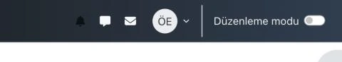
01 · Düzenleme modu düğmesi1
01 · Düzenleme modu düğmesi
02
İlgili ders bölümünün altındaki + düğmesi seçildikten sonra açılan menüden Etkinlik veya kaynak seçilir.
Ekranda Yeni etkinlik veya kaynak ekle penceresi açılır.
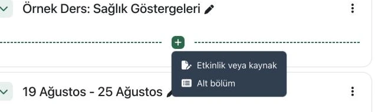
02 · Ekle (+) düğmesi02 · Etkinlik veya kaynak12
02 · Ekle (+) düğmesi
02 · Etkinlik veya kaynak
03
Açılan pencerede önce Kaynaklar sekmesi, ardından Sayfa seçeneği seçilir.
Yeni Sayfa oluşturma formu açılır.
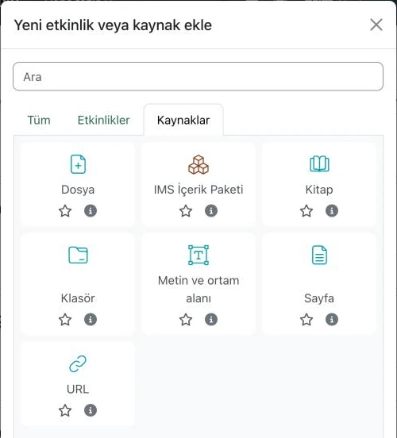
03 · Kaynaklar sekmesi03 · Sayfa seçeneği12
03 · Kaynaklar sekmesi
03 · Sayfa seçeneği
04
Adı alanına ders videosunun başlığı yazılır (ör. Ders 3 · Hız ve Oranlar (Video)).
Yazılan başlık, kurs ana sayfasında içerik adı olarak yer alır.
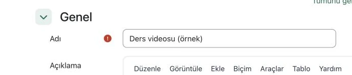
04 · Adı alanı1
04 · Adı alanı
B. Video Bağlantısının Sayfaya Gömülmesi
Adım
Uygulama Adımı / İşlem
Sistem Yanıtı / Ekran Görünümü
05
Sayfa içeriği araç çubuğunda yer alan Çoklu ortam düğmesi seçilir. Bu düğmede oynatma simgesi bulunur.
Medya Ekle penceresi ekranda açılır.
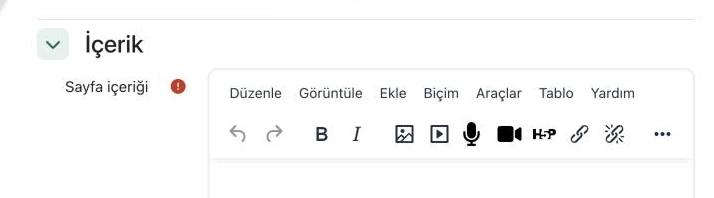
05 · Çoklu ortam düğmesi1
05 · Çoklu ortam düğmesi
06
YouTube bağlantısı Veya URL yoluyla ekleyin alanına yapıştırılır ve Ekle düğmesi seçilir.
Ekranda Medya detayları penceresi açılır.
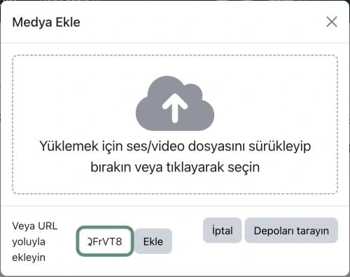
06 · URL giriş alanı06 · Ekle düğmesi12
06 · URL giriş alanı
06 · Ekle düğmesi
Uygulama Standardı · Ders videosu YouTube kanalına Liste dışı görünürlük ayarıyla yüklenmiş olmalıdır.
Önemli Uyarı · Kullanılan bağlantı bir oynatma listesine değil, doğrudan tekil videoya ait olmalıdır.
07
Medyanın başlığı alanına video başlığı yazılır ve Kaydet düğmesi seçilir.
Video bağlantısı metin düzenleme alanına eklenir.
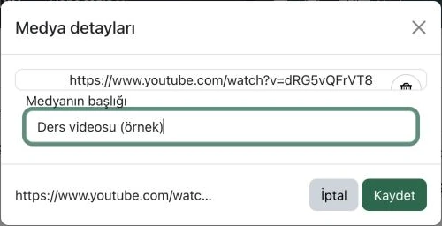
07 · Medyanın başlığı alanı07 · Kaydet düğmesi12
07 · Medyanın başlığı alanı
07 · Kaydet düğmesi
Uygulama Standardı · Medyanın başlığı alanında URL adresi bırakılmamalı, anlamlı bir ad yazılmalıdır. Ekran okuyucular bu başlığı sesli okur.
08
Sayfanın alt kısmında yer alan Kaydet ve göster düğmesi seçilir.
Sayfa kaydedilerek açılır ve gömülü video oynatıcı ekrana gelir.
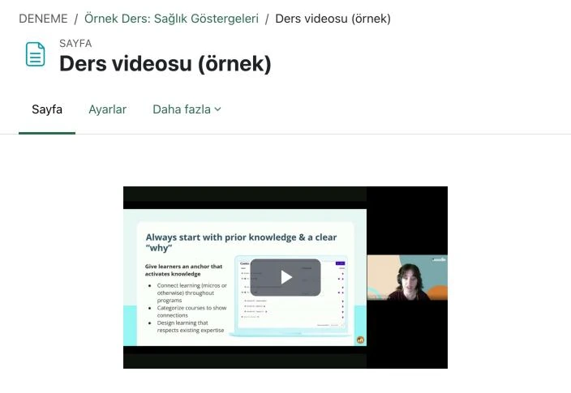
Sonuç · Gömülü video oynatıcı1
Sonuç · Gömülü video oynatıcı
C. Görünüm ve İşleyişin Kontrol Edilmesi
Adım
Uygulama Adımı / İşlem
Sistem Yanıtı / Ekran Görünümü
09
Oynatıcı başlatılarak videonun sorunsuz açıldığı kontrol edilir.
Video sorunsuz biçimde oynatılır.
10
Kurs ana sayfasına dönülerek içeriğin bölüm içindeki sırası kontrol edilir.
Ders videosu sayfası, sunum slaytlarının hemen üstünde yer alır.
Olası Sorunlar ve Çözüm Yöntemleri
Karşılaşılan Durum veya Katılımcı Bildirimi
Olası Teknik Neden
Çözüm Yöntemi
Oynatıcı ekranında Video kullanılamıyor benzeri bir hata iletisi yer alıyor.
Video, YouTube kanalına Gizli görünürlük ayarıyla yüklenmiştir.
Bilişim koordinatöründen video görünürlük ayarını Liste dışı yapması talep edilir.
Sayfada video oynatıcı yerine yalnızca bağlantı metni yer alıyor.
Eklenen bağlantı bir oynatma listesine veya YouTube dışı bir kaynağa aittir.
Doğrudan videoya ait bağlantı adresi kullanılır: https://www.youtube.com/watch?v=… veya https://youtu.be/…
Ekle düğmesi pasif (soluk) durumda görünüyor ve seçilemiyor.
URL giriş alanı boş bırakılmıştır veya bağlantı adresi eksik kopyalanmıştır.
Video bağlantısı eksiksiz kopyalanarak ilgili alana yeniden yapıştırılır.
Katılımcılar oluşturulan ders sayfasını göremiyor.
İlgili sayfa veya ders bölümü katılımcı görünümüne kapalıdır (gizlenmiştir).
İçeriğin sağındaki üç nokta menüsünden Göster seçeneği etkin kılınır.
Form kaydedilemiyor ve Adı alanının yanında kırmızı uyarı yer alıyor.
Zorunlu olan Adı alanı boş bırakılmıştır.
Adı alanına uygun başlık yazılarak form yeniden kaydedilir.
Bu bölümde, ek okumaların URL ve Klasör kaynaklarıyla derse eklenmesi açıklanmaktadır. URL tek bir web bağlantısı için, Klasör ise birden çok dosya için kullanılır.
Uygulama Standardı · Yalnızca telif ve paylaşım izni bulunan tam metinler yüklenmelidir. Diğer yayınlar için erişim bağlantısı verilmelidir (bkz. Bölüm 0.3).
Kaynak Türü Seçimi İçin Karar Tablosu
Mevcut Durum
İzlenecek Yöntem
Çıktı / Sonuç
Tek bir web sayfası ya da çevrim içi makale paylaşılacaksa
URL kaynağı kullanılır (Kısım A).
Katılımcı, bağlantıyı seçerek hedef sayfaya ulaşır.
Birden çok PDF ya da veri dosyası paylaşılacaksa
Klasör kaynağı kullanılır (Kısım B).
Dosyalar tek bir öğe altında listelenir.
Yalnızca bir PDF dosyası paylaşılacaksa
Dosya kaynağı kullanılır (bkz. Bölüm 3.2).
Dosya, ders bölümünde ayrı bir öğe olarak yer alır.
A. URL Kaynağının Eklenmesi
Adım
Uygulama Adımı / İşlem
Sistem Yanıtı / Ekran Görünümü
01
Ders bölümünün altındaki + düğmesi seçildikten sonra açılan menüden Etkinlik veya kaynak seçilir.
Yeni etkinlik veya kaynak ekle penceresi açılır.
02
Pencerede Kaynaklar sekmesi, ardından URL seçeneği seçilir.
Yeni URL formu açılır.
03
Adı alanına kaynağın adı, Harici URL alanına bağlantı adresi yazılır.
Ad, kurs sayfasında bağlantı metni olarak görünür.
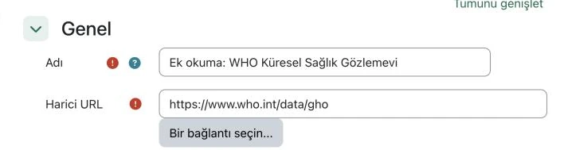
03 · Adı alanı03 · Harici URL alanı12
03 · Adı alanı
03 · Harici URL alanı
Uygulama Önerisi · Makaleler için DOI bağlantısı kullanılabilir (ör. https://doi.org/…). DOI bağlantısı, yayının adresi değişse de çalışır.
04
Görünüm bölümü genişletilir ve Göster listesinde Otomatik seçeneği bırakılır.
Bağlantı, katılımcının çalıştığı sekmede açılır.
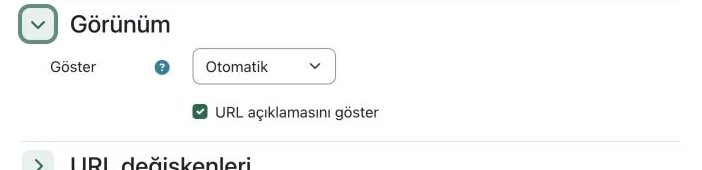
04 · Göster listesi1
04 · Göster listesi
Uygulama Önerisi · Göster listesinde yeni sekme seçeneği yoktur. Açılır pencere seçeneği, tarayıcıların açılır pencere engelleyicileri nedeniyle önerilmez.
05
Formun altındaki Kaydet ve derse dön düğmesi seçilir.
URL kaynağı, bağlantı simgesiyle ders bölümünde yer alır.
B. Klasör Kaynağının Eklenmesi
Adım
Uygulama Adımı / İşlem
Sistem Yanıtı / Ekran Görünümü
06
+ düğmesinden Etkinlik veya kaynak seçilir. Kaynaklar sekmesinde Klasör seçeneği seçilir.
Yeni Klasör formu açılır.
07
Adı alanına klasörün adı yazılır (ör. Ek okumalar).
Bu ad kurs sayfasında görünür.
08
Dosyalar bilgisayardan Dosyalar alanına sürüklenip bırakılır.
Eklenen dosyalar alanda simgeleriyle görüntülenir.
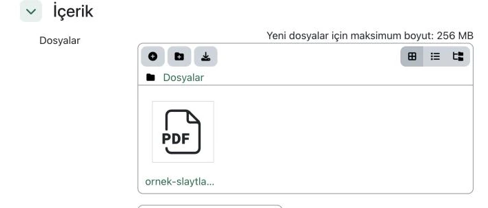
09 · Ekle... düğmesiSonuç · Eklenen dosya12
09 · Ekle... düğmesi
Sonuç · Eklenen dosya
09
Kursta yüklü bir dosya kullanılacaksa Ekle... düğmesi seçilir.
Dosya seçici penceresi açılır.
10
Sunucu dosyaları deposunda dosya seçilir. Ardından Bu dosyayı seç düğmesi seçilir.
Dosya, klasörün dosya alanına eklenir.
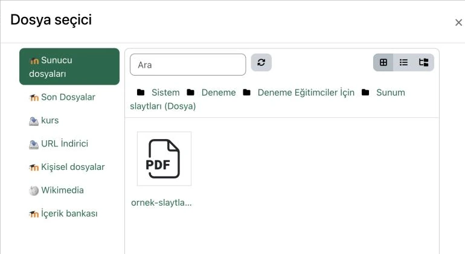
10 · Sunucu dosyaları10 · Kurstaki dosya12
10 · Sunucu dosyaları
10 · Kurstaki dosya
11
Formun altındaki Kaydet ve derse dön düğmesi seçilir.
Klasör, ders bölümünde URL kaynağının altında yer alır.
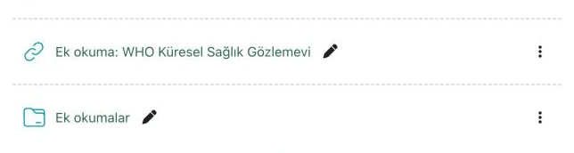
Sonuç · URL kaynağıSonuç · Klasör kaynağı12
Sonuç · URL kaynağı
Sonuç · Klasör kaynağı
Olası Sorunlar ve Çözüm Yöntemleri
Karşılaşılan Durum veya Katılımcı Bildirimi
Olası Teknik Neden
Çözüm Yöntemi
Bağlantı, Moodle sayfasının içinde boş bir çerçeve olarak görünüyor.
Göster ayarı Göm olarak seçilmiştir. Birçok site, başka sayfalara gömülmeyi engeller.
Görünüm bölümünde Göster ayarı Otomatik olarak değiştirilir.
Bağlantı seçildiğinde hedef sayfa yerine bir ara sayfa açılıyor.
Düzenleme yetkisi olan kullanıcılara, bağlantıdan önce bir ara sayfa gösterilir.
Bu durum yalnızca eğitici hesabında görülür. Katılımcı görünümü Bölüm 3.9 ile denetlenebilir.
Klasör, kurs sayfasında boş görünüyor.
Dosyanın yüklenmesi tamamlanmadan form kaydedilmiştir.
Klasörün Ayarları düzenle formunda dosya yeniden eklenir ve form kaydedilir.
Klasördeki PDF tarayıcıda açılmak yerine iniyor.
Dosyaları indirmeye zorunlu tut kutusu işaretlidir. Bu ayar varsayılan olarak açıktır.
Klasörün Ayarları düzenle formunda bu kutunun işareti kaldırılır.
Bağlantı "sayfa bulunamadı" hatası veriyor.
Hedef sayfanın adresi değişmiş ya da kaldırılmıştır.
Bağlantı yeni adresle güncellenir. Makalelerde DOI bağlantısı tercih edilir.
3.5 Sınav Etkinliğinin Oluşturulması
Bu bölümde, ders sonu sınavının Sınav etkinliğiyle oluşturulması açıklanmaktadır. Süreç üç kısımdan oluşur: sınavın ayarlanması, soruların tek tek eklenmesi ve soruların dosyadan toplu aktarımı.
Sınav ayarları için kesin bir standart yoktur. Kartta yer alan öneri kutuları, dersin amacına göre uyarlanabilir.
Soru Ekleme Yöntemi Seçimi İçin Karar Tablosu
Mevcut Durum
İzlenecek Yöntem
Çıktı / Sonuç
Az sayıda soru eklenecekse
Sorular tek tek eklenir (Kısım B).
Her soru, formda görülerek denetlenir.
Çok sayıda çoktan seçmeli soru metin olarak hazırsa
Aiken formatı ile toplu aktarım yapılır (Kısım C).
Sorular tek dosyayla soru bankasına aktarılır.
Sorularda geri bildirim ya da farklı soru türleri varsa
Gift format ile toplu aktarım yapılır (Kısım C).
Geri bildirimler ve soru türleri korunur.
A. Sınavın Oluşturulması ve Ayarlanması
Adım
Uygulama Adımı / İşlem
Sistem Yanıtı / Ekran Görünümü
01
Ders bölümünün + düğmesinden Etkinlik veya kaynak seçilir. Etkinlikler sekmesinde Sınav seçeneği seçilir.
Yeni Sınav formu açılır.
02
Adı alanına sınavın adı yazılır (ör. Ders sonu sınavı).
Zamanlama bölümü genişletilir. Açılış ve kapanış için Etkinleştir kutuları işaretlenir ve tarihler seçilir.
Tarih alanları seçilebilir duruma gelir.
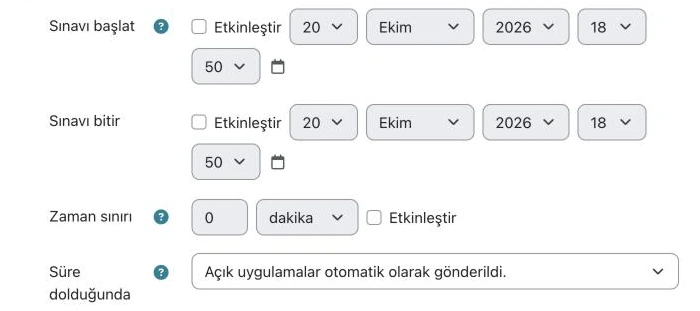
03 · Açılış tarihi03 · Kapanış tarihiİsteğe bağlı · Süre sınırı123
03 · Açılış tarihi
03 · Kapanış tarihi
İsteğe bağlı · Süre sınırı
04
Not bölümünde Deneme hakkı listesinden deneme sayısı seçilir.
Katılımcının sınava kaç kez girebileceği belirlenir.
Uygulama Önerisi · Ön test için tek deneme hakkı seçilebilir. Alıştırma amaçlı sınavlarda Limitsiz seçeneği kullanılabilir.
05
Seçenekleri incele bölümünde, katılımcının yanıtları hangi aşamada göreceği sütunlardan işaretlenir.
Her sütun, sınavın bir aşamasına karşılık gelir.
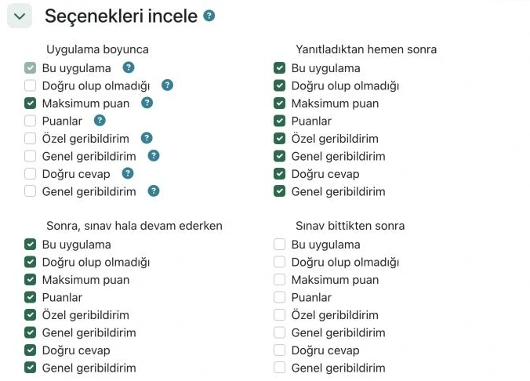
05 · Yanıttan hemen sonra05 · Sınav bittikten sonra12
05 · Yanıttan hemen sonra
05 · Sınav bittikten sonra
Uygulama Önerisi · Öğrenmeyi destekleyen sınavlarda doğru yanıtlar Yanıtladıktan hemen sonra gösterilebilir. Değerlendirme sınavlarında Sınav bittikten sonra sütunu tercih edilebilir.
Önemli Uyarı · Sınav bittikten sonra sütunu, yalnızca Sınavı bitir tarihi etkinleştirildiğinde işaretlenebilir.
06
Formun altındaki Kaydet ve göster düğmesi seçilir.
Sınav sayfası açılır ve Henüz bir soru eklenmemiş uyarısı görüntülenir.
Soru adı alanına kısa bir ad, Soru metini alanına soru kökü yazılır.
Soru adı katılımcılara gösterilmez.
10 · Soru adı10 · Soru metini12
10 · Soru adı
10 · Soru metini
11
1. Seçenek alanına doğru yanıt yazılır ve Not listesinde 100% seçilir. Diğer seçenek alanlarına çeldiriciler yazılır.
Boş bırakılan seçenek alanları soruya eklenmez.
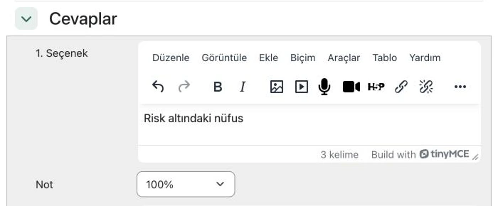
11 · Doğru yanıt11 · Not: 100%12
11 · Doğru yanıt
11 · Not: 100%
12
Formun altındaki Değişiklikleri kaydet düğmesi seçilir.
Soru, sınavın soru listesinde yer alır.
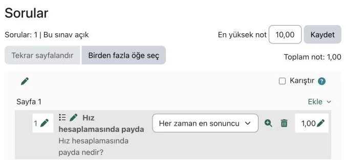
Sonuç · Eklenen soruSınav notu ölçeği12
Sonuç · Eklenen soru
Sınav notu ölçeği
Uygulama Önerisi · En yüksek not alanı sınav notunun ölçeğini belirler. Soru puanlarının toplamı (Toplam not) bu ölçeğe orantılanır.
Kritik İşlem (Geri Alınamaz) · İlk katılımcı denemesinden sonra sınava soru eklenemez ve sınavdan soru çıkarılamaz. Bu kısıt yalnızca bütün denemeler silinerek kaldırılabilir. Silinen denemeler geri getirilemez.
C. Soruların Dosyadan Toplu Aktarımı
Adım
Uygulama Adımı / İşlem
Sistem Yanıtı / Ekran Görünümü
13
Sorular, aşağıdaki örneklere uygun biçimde düz metin (.txt) dosyasına yazılır. Dosya UTF-8 kodlamasıyla kaydedilir.
Her soru, bir boş satırla ötekinden ayrılır.
Uygulama Önerisi · Aiken ve GIFT biçimlerinin ne olduğu ve hangi durumda kullanıldığı Bölüm 2.4 içinde açıklanmıştır.
14
Sınav sayfasının üst menüsünden Soru bankası seçilir.
Sınavın soru bankası açılır.
15
Sayfanın üstündeki listeden İçe Aktar seçilir.
Dosyadan soruları aktar sayfası açılır.
16
Dosya biçimi bölümünde Gift format ya da Aiken formatı seçilir.
Seçilen biçim, dosyanın okunma kurallarını belirler.
15 · İçe Aktar16 · Aiken biçimi16 · GIFT biçimi123
15 · İçe Aktar
16 · Aiken biçimi
16 · GIFT biçimi
17
Metin dosyası İçeri aktar alanına sürüklenip bırakılır. Ardından İçeri aktar düğmesi seçilir.
Aktarılan sorular ekranda listelenir.
18
Sorular sayfasında Ekle menüsünden soru bankasından seçilir. Sorular işaretlenir ve Seçilen soruları sınava ekle düğmesi seçilir.
Aktarılan sorular, sınavın soru listesinde yer alır.
Aiken biçimi örneği (yalnızca çoktan seçmeli sorular)
Hız hesaplamasında payda nedir?
A. Risk altındaki nüfus
B. Olgu sayısı
C. Toplam ölüm sayısı
D. Örneklem büyüklüğü
ANSWER: A
GIFT biçimi örneği (geri bildirimli çoktan seçmeli soru)
::Hız paydası:: Hız hesaplamasında payda nedir? {
=Risk altındaki nüfus #Doğru. Payda, olayın görülebileceği nüfustur.
~Olgu sayısı #Olgu sayısı paydır.
~Toplam ölüm sayısı
~Örneklem büyüklüğü
}
Uygulama Önerisi · Aiken biçiminde ANSWER: satırı büyük harfle yazılmalıdır. GIFT biçiminde doğru yanıt = işaretiyle, çeldiriciler ~ işaretiyle başlar.
Olası Sorunlar ve Çözüm Yöntemleri
Karşılaşılan Durum veya Katılımcı Bildirimi
Olası Teknik Neden
Çözüm Yöntemi
Katılımcılar sınava başlayamıyor.
Sınavı başlat tarihi henüz gelmemiştir ya da sınav kurs sayfasında gizlidir.
Zamanlama bölümündeki tarih ve kurs sayfasındaki görünürlük denetlenir.
Katılımcılar sınavdan sonra doğru yanıtları göremiyor.
Seçenekleri incele bölümünde Doğru cevap kutusu işaretli değildir.
İlgili sütunda Doğru cevap kutusu işaretlenir. Ayar, tamamlanmış denemelere de uygulanır.
Sınav bittikten sonra sütunundaki kutular seçilemiyor.
Sınavı bitir tarihi etkinleştirilmemiştir.
Zamanlama bölümünde Sınavı bitir için Etkinleştir kutusu işaretlenir.
Sınava yeni soru eklenemiyor.
Sınava en az bir katılımcı denemesi yapılmıştır.
Yeni sorular için ayrı bir sınav oluşturulur. Denemelerin silinmesi geri alınamaz.
İçe aktarma sırasında biçim hatası görüntüleniyor.
Dosya, seçilen biçimin yazım kurallarına uymamaktadır.
Dosya, Kısım C örnekleriyle karşılaştırılır. Seçilen Dosya biçimi denetlenir.
Aktarılan sorularda Türkçe karakterler bozuk görünüyor.
Dosya UTF-8 kodlamasıyla kaydedilmemiştir.
Dosya, metin düzenleyicide UTF-8 kodlamasıyla yeniden kaydedilir ve yeniden aktarılır.
3.6 Ödev Etkinliğinin Oluşturulması ve Değerlendirilmesi
Bu bölümde, katılımcıların dosya teslim ettiği Ödev etkinliğinin oluşturulması ve gönderimlerin notlandırılması açıklanmaktadır.
Ödevin tarihleri, gönderimlerin hangi aralıkta kabul edileceğini belirler. Tarih alanlarının işlevleri aşağıdaki tabloda özetlenmiştir.
Ödev Tarih Alanları
Tarih Alanı
İşlevi
Katılımcı Açısından Sonucu
Gönderme tarihi başlangıcı
Gönderimlerin açılacağı tarihi belirler.
Bu tarihten önce dosya yüklenemez.
Son teslim tarihi
Beklenen teslim tarihini belirler.
Bu tarihten sonraki gönderimler geç olarak işaretlenir.
Tamamlanması gereken tarih
Son kabul tarihini belirler.
Bu tarihten sonra gönderim kabul edilmez.
Not vermeyi hatırlat
Eğiticiye not verme hatırlatması yapılır.
Katılımcıya gösterilmez.
A. Ödevin Oluşturulması
Adım
Uygulama Adımı / İşlem
Sistem Yanıtı / Ekran Görünümü
01
Ders bölümünün + düğmesinden Etkinlik veya kaynak seçilir. Etkinlikler sekmesinde Ödev seçeneği seçilir.
Yeni Ödev formu açılır.
02
Adı alanına ödevin adı, Açıklama alanına görevin kısa tanımı yazılır.
Not verme ekranı, ilk katılımcının gönderimiyle açılır.
Uygulama Önerisi · Bütün gönderimler ödevin üst menüsündeki Gönderimler sekmesinde liste hâlinde görüntülenebilir.
07
Ekranın sağ üstündeki Kullanıcı değiştir listesinden katılımcı seçilir.
Seçilen katılımcının gönderimi görüntülenir.
08
Not bölümündeki alana puan, Geri bildirim yorumları alanına açıklama yazılır.
Yazılan not ve yorum, kaydedilene kadar katılımcıya gösterilmez.
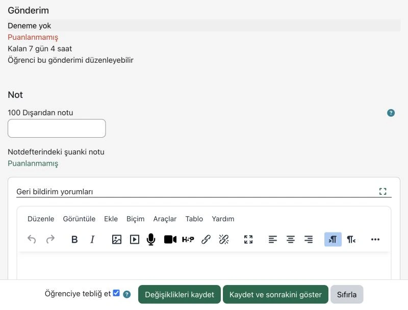
08 · Puan alanı08 · Geri bildirim yorumuKatılımcıya bildirim09 · Kaydet1234
08 · Puan alanı
08 · Geri bildirim yorumu
Katılımcıya bildirim
09 · Kaydet
09
Ekranın altındaki Değişiklikleri kaydet düğmesi seçilir.
Not, katılımcının not defterine işlenir.
Uygulama Önerisi · Öğrenciye tebliğ et kutusu işaretliyse katılımcıya not bildirimi gönderilir. Kaydet ve sonrakini göster düğmesi, sıradaki katılımcıya geçer.
Olası Sorunlar ve Çözüm Yöntemleri
Karşılaşılan Durum veya Katılımcı Bildirimi
Olası Teknik Neden
Çözüm Yöntemi
Katılımcı dosya yükleyemiyor.
Dosya gönderimleri işaretli değildir ya da dosya, Azami gönderim büyüklüğü sınırını aşmaktadır.
Gönderim türü bölümündeki ayarlar denetlenir ve gerekirse sınır yükseltilir.
Son teslimden sonra gönderim kabul edilmiyor.
Tamamlanması gereken tarih geçmiştir.
Ek süre tanınacaksa Uygunluk bölümünde bu tarih ileri alınır.
Bazı gönderimler geç olarak işaretleniyor.
Gönderim, Son teslim tarihi geçtikten sonra yapılmıştır.
İşaret bilgi amaçlıdır ve notu kendiliğinden etkilemez. Geç gönderimler istenmiyorsa iki tarih aynı gün olarak ayarlanır.
Katılımcılar verilen notları göremiyor.
Değerlendirme iş akışın kullan ayarı açıktır ve notlar henüz yayımlanmamıştır.
Notlar iş akışında yayımlanır ya da ayar Hayır olarak değiştirilir.
3.7 Tartışma Forumunun Oluşturulması
Bu bölümde, ders konularının tartışılacağı Forum etkinliğinin oluşturulması ve ilk tartışma konusunun açılması açıklanmaktadır.
Önemli Uyarı · Kursun en üstündeki Announcements (Duyurular) forumuna yazılan her ileti, bütün katılımcılara e-postayla gönderilir. Bu forum yalnızca kurs geneli duyurular için kullanılmalıdır.
Forum Türü Seçimi İçin Karar Tablosu
Forum Türü
Uygun Olduğu Durum
Katılımcının Yapabildiği
Genel kullanım için standart forum
Ders boyunca açık soru-yanıt ve tartışma
Yeni konu açabilir ve bütün konulara yanıt yazabilir.
Tek bir tartışma
Tek bir soru üzerine odaklanan tartışma
Yalnızca eğiticinin açtığı konuya yanıt yazabilir.
Soru/Cevap forumu
Bağımsız görüş toplanması
Diğer yanıtları, kendi yanıtını gönderdikten sonra görebilir.
Herkes tek mesaj gönderebilir
Her katılımcının bir çalışma paylaşması
Yalnızca bir konu açabilir; yanıtlarda sınır yoktur.
Blog biçiminde görünen standart forum
Yazı ve yorum biçimindeki paylaşımlar
Konular, ilk iletileriyle birlikte blog gibi listelenir.
A. Forumun Oluşturulması
Adım
Uygulama Adımı / İşlem
Sistem Yanıtı / Ekran Görünümü
01
Ders bölümünün + düğmesinden Etkinlik veya kaynak seçilir. Etkinlikler sekmesinde Forum seçeneği seçilir.
Yeni Forum formu açılır.
02
Adı alanına forumun adı, Açıklama alanına forumun amacı yazılır.
Açıklama, forum sayfasının üstünde görüntülenir.
03
Forum türü listesinden karar tablosuna uygun tür seçilir.
Seçilen tür, katılımcıların konu açma biçimini belirler.
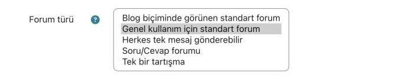
03 · Forum türü1
03 · Forum türü
Uygulama Önerisi · Ders soruları için çoğu durumda Genel kullanım için standart forum yeterlidir.
04
Abonelik ve takip bölümü genişletilir ve Abonelik modu seçilir.
Seçilen mod, iletilerin katılımcılara e-postayla ulaşıp ulaşmayacağını belirler.
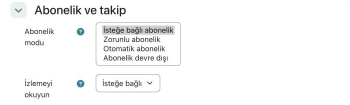
04 · Abonelik modu1
04 · Abonelik modu
Uygulama Önerisi · İletilerin bütün katılımcılara ulaşması isteniyorsa Otomatik abonelik seçilebilir. Zorunlu abonelikte katılımcılar aboneliği bırakamaz.
05
Formun altındaki Kaydet ve göster düğmesi seçilir.
Forum sayfası açılır ve henüz konu bulunmadığı belirtilir.
Forum sayfasındaki Yeni tartışma konusu ekle düğmesi seçilir.
Konu ve Mesaj alanları açılır.
07
Konu alanına konunun başlığı, Mesaj alanına tartışma sorusu yazılır.
Yazılan metin, gönderilene kadar yalnızca eğiticide görünür.
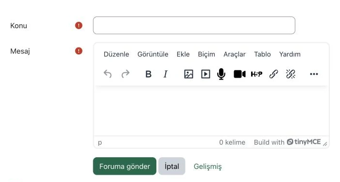
07 · Konu07 · Mesaj08 · Foruma gönderEk ve diğer seçenekler1234
07 · Konu
07 · Mesaj
08 · Foruma gönder
Ek ve diğer seçenekler
08
Foruma gönder düğmesi seçilir.
Konu, forum sayfasındaki listede yer alır.
Uygulama Önerisi · Gönderilen ileti kısa bir süre düzeltilebilir. Abonelere e-posta bu süre dolduktan sonra gönderilir.
Olası Sorunlar ve Çözüm Yöntemleri
Karşılaşılan Durum veya Katılımcı Bildirimi
Olası Teknik Neden
Çözüm Yöntemi
Katılımcılar yeni iletilerden haberdar olmuyor.
Abonelik moduİsteğe bağlı abonelik olarak seçilmiştir ve katılımcılar abone olmamıştır.
Abonelik moduOtomatik abonelik ya da Zorunlu abonelik olarak değiştirilir.
Katılımcılar yeni konu açamıyor.
Forum türü olarak Tek bir tartışma ya da Soru/Cevap forumu seçilmiştir.
Forum türüGenel kullanım için standart forum olarak değiştirilir.
Katılımcılar diğer yanıtları göremiyor.
Soru/Cevap forumu türünde yanıtlar, katılımcı kendi yanıtını gönderdikten sonra görünür.
Bu davranış türün özelliğidir. İstenmiyorsa forum türü değiştirilir.
Katılımcılar çok sayıda e-posta aldığını bildiriyor.
Zorunlu abonelik seçilmiştir ya da Announcements forumu sık kullanılmaktadır.
Abonelik modu gözden geçirilir. Duyurular tek iletide toplanır.
3.8 Erişim Koşulları ve Tamamlama Takibi Ayarları
Bu bölümde, ders içeriklerinin belirli bir sırayla açılması için tamamlama koşullarının ve erişim kısıtlamalarının ayarlanması açıklanmaktadır.
Örnekte ders sonu sınavı, ders videosu sayfası açıldıktan sonra erişime açılır. Bunun için önce video sayfasına tamamlama koşulu, ardından sınava erişim kısıtlaması eklenir.
Kısıtlama Türü Seçimi İçin Karar Tablosu
Kısıtlama Türü
Uygun Olduğu Durum
Sonuç
Etkinlik tamamlama
Önceki içeriğin tamamlanması isteniyorsa
İçerik, önceki etkinlik tamamlandığında açılır.
Tarih
İçerik belirli bir tarihte açılacaksa
İçerik, belirlenen tarih ve saatte açılır.
Not
Belirli bir notun alınması isteniyorsa
İçerik, not koşulu sağlandığında açılır.
Kullanıcı profili
Erişim profil bilgisine göre sınırlanacaksa
Yalnızca koşulu sağlayan katılımcılar erişir.
Kısıtlama ayarla
Birden çok koşul birlikte kullanılacaksa
Koşullar tümü ya da herhangi mantığıyla birleştirilir.
A. Tamamlama Koşulunun Eklenmesi
Adım
Uygulama Adımı / İşlem
Sistem Yanıtı / Ekran Görünümü
01
Video sayfasının üç nokta menüsünden Ayarları düzenle seçilir.
Sayfanın ayarlar formu açılır.
02
Tamamlama koşulları bölümü genişletilir ve Koşulları ekleyin seçeneği seçilir.
Koşul seçenekleri görüntülenir.
03
Etkinliği görüntüleme kutusu işaretlenir.
Sayfanın açılması, etkinliğin tamamlanması için yeterli olur.
Önemli Uyarı · Etkinliği görüntüleme koşulu yalnızca sayfanın açılmasını izler. Videonun sonuna kadar izlendiğini denetlemez.
04
Formun altındaki Kaydet ve derse dön düğmesi seçilir.
Kurs sayfasında etkinliğin yanında Tamamlama düğmesi görüntülenir.
B. Erişim Kısıtlamasının Eklenmesi
Adım
Uygulama Adımı / İşlem
Sistem Yanıtı / Ekran Görünümü
05
Sınavın Ayarları düzenle formu açılır ve Erişimi sınırla bölümü genişletilir.
Erişim kısıtlamaları alanı görüntülenir.
06
Kısıtlama ekle... düğmesi seçilir.
Kısıtlama türlerinin listelendiği pencere açılır.
07
Pencerede Etkinlik tamamlama düğmesi seçilir.
Formda etkinlik tamamlama koşulu oluşur.
07 · Etkinlik tamamlama1
07 · Etkinlik tamamlama
08
Etkinlik veya kaynak listesinden video sayfası seçilir. Durum listesi tamamlandı olarak işaretlenmeli olarak bırakılır.
Koşul, seçilen etkinliğe bağlanır.
08 · Etkinlik ve durumGöz simgesi12
08 · Etkinlik ve durum
Göz simgesi
Uygulama Önerisi · Tamamlanan önceki etkinlik seçeneği, tamamlama koşulu olan bir önceki etkinliği koşul yapar. Etkinliklerin sırası değişirse koşul da değişir.
Uygulama Önerisi · Göz simgesi açıkken etkinlik, koşulu sağlamayan katılımcılara gri ve kısıtlama bilgisiyle gösterilir. Simge kapatılırsa etkinlik tamamen gizlenir. Bazı koşul türlerinde simge değiştirilemez.
09
Formun altındaki Kaydet ve derse dön düğmesi seçilir.
Sınavın altında kısıtlama bilgisi görüntülenir.
Sonuç · Tamamlama koşuluSonuç · Kısıtlama bilgisi12
Sonuç · Tamamlama koşulu
Sonuç · Kısıtlama bilgisi
Uygulama Standardı · Kısıtlamalar eğitici hesabını etkilemez. Ayarların sonucu Bölüm 3.9'daki katılımcı görünümüyle denetlenmelidir.
Olası Sorunlar ve Çözüm Yöntemleri
Karşılaşılan Durum veya Katılımcı Bildirimi
Olası Teknik Neden
Çözüm Yöntemi
Katılımcı içeriği gri görüyor ya da hiç görmüyor.
Erişim koşulu henüz karşılanmamıştır.
Koşul, katılımcı görünümünde denetlenir (bkz. Bölüm 3.9). Gerekirse koşul değiştirilir.
Video izlendiği hâlde etkinlik tamamlanmış görünmüyor.
Video sayfasında tamamlama koşulu tanımlanmamıştır.
Sayfanın Tamamlama koşulları bölümünde Etkinliği görüntüleme kutusu işaretlenir.
Etkinlik veya kaynak listesinde istenen etkinlik yok.
Bu etkinlikte tamamlama koşulu tanımlanmamıştır.
Önce Kısım A uygulanır, ardından kısıtlama yeniden eklenir.
Eğitici hesabında kısıtlama çalışmıyor gibi görünüyor.
Eğitici rolü kısıtlamalardan etkilenmez ve bütün içeriği görür.
Kontrol, Şu role geç... ile katılımcı görünümünde yapılır (bkz. Bölüm 3.9).
3.9 Ders İçeriğinin Katılımcı Görünümünde Kontrol Edilmesi
Bu bölümde, ders içeriğinin katılımcı gözünden denetlenmesi açıklanmaktadır. Denetim için Şu role geç... özelliğiyle geçici olarak Öğrenci rolüne geçilir.
Önemli Uyarı · Rol değiştirme görünümü, gerçek katılımcı deneyimini her zaman tam olarak yansıtmayabilir. Moodle da bu görünümün mükemmel olmayabileceğini belirtir.
A. Katılımcı Rolüne Geçilmesi
Adım
Uygulama Adımı / İşlem
Sistem Yanıtı / Ekran Görünümü
01
Kurs sayfasındayken sağ üstteki kullanıcı menüsü açılır ve Şu role geç... seçilir.
Kurs için seçilebilecek rollerin listesi açılır.
01 · Kullanıcı menüsü01 · Şu role geç...12
01 · Kullanıcı menüsü
01 · Şu role geç...
02
Listede Öğrenci düğmesi seçilir.
Kurs sayfası, katılımcının göreceği biçimde açılır.
Moodle uyarısı02 · Rol düğmesi12
Moodle uyarısı
02 · Rol düğmesi
B. Kurs Sayfasının Denetlenmesi
Adım
Uygulama Adımı / İşlem
Sistem Yanıtı / Ekran Görünümü
03
Kurs sayfasındaki bölümler ve etkinlikler, aşağıdaki kontrol listesine göre gözden geçirilir.
Kısıtlı etkinlikler kilit simgesi ve koşul bilgisiyle görüntülenir.
Tamamlama durumuKısıtlı sınav12
Tamamlama durumu
Kısıtlı sınav
04
Video sayfaları, bağlantılar ve dosyalar tek tek açılarak denetlenir.
İçerikler, katılımcının göreceği biçimde açılır.
Kritik İşlem (Geri Alınamaz) · Öğrenci rolündeyken sınav başlatılmamalı, ödev gönderilmemeli ve foruma ileti yazılmamalıdır. Bu işlemler gerçek kayıt oluşturur. Başlatılan bir sınav denemesi, soruların değiştirilmesini engeller.
Uygulama Önerisi · Daha gerçekçi bir denetim için bilişim koordinatöründen deneme amaçlı bir katılımcı hesabı istenebilir.
Katılımcı Görünümü Kontrol Listesi
Bölüm başlıkları ve bölümlerin sırası doğru görünmektedir.
Henüz açılmaması gereken içerikler gizli ya da kısıtlıdır.
Kısıtlı içeriklerdeki koşul bilgisi anlaşılırdır.
Video sayfaları açılmakta ve videolar oynatılmaktadır.
Bağlantılar doğru adreslere gitmektedir.
PDF dosyaları açılmakta ya da indirilmektedir.
C. Normal Role Dönülmesi
Adım
Uygulama Adımı / İşlem
Sistem Yanıtı / Ekran Görünümü
05
Kullanıcı menüsü yeniden açılır ve Normal rolüme dön seçilir.
Kurs sayfası eğitici görünümüyle yeniden açılır.
05 · Normal rolüme dön1
05 · Normal rolüme dön
Olası Sorunlar ve Çözüm Yöntemleri
Karşılaşılan Durum veya Katılımcı Bildirimi
Olası Teknik Neden
Çözüm Yöntemi
Kullanıcı menüsünde Şu role geç... seçeneği görünmüyor.
Kurs dışındaki bir sayfada bulunulmaktadır ya da rol zaten değiştirilmiştir.
Kurs sayfasına dönülür. Menüde Normal rolüme dön varsa önce bu seçenek seçilir.
Eğitici görünümüne dönülemiyor.
Rol değişikliği oturum boyunca sürer.
Kullanıcı menüsünden Normal rolüme dön seçilir. Oturumu kapatıp yeniden açmak da rolü sıfırlar.
Katılımcı görünümünde bir içerik hiç görünmüyor.
İçerik gizlidir ya da erişim koşulu nedeniyle tamamen gizlenmiştir.
İçeriğin görünürlüğü ve erişim koşulları denetlenir (bkz. Bölüm 3.8).
Video katılımcı görünümünde oynatılmıyor.
YouTube videosunun görünürlüğü Gizli olarak ayarlanmıştır.
Görünürlük Liste dışı olarak değiştirilir (bkz. Bölüm 1.4).
3.10 Moodle Üzerinde Kısa Ses ve Görüntü Kaydı Oluşturulması
Bu bölümde, Moodle metin düzenleyicisindeki Ses kaydı ve Video kaydet düğmeleriyle kısa kayıt oluşturulması açıklanmaktadır. Kayıt, yazılan metnin içine oynatıcı olarak eklenir.
Uygulama Standardı · Bu sitede kayıt süresi en çok 2 dakikadır ve kayıt duraklatılamaz. Ekran kaydı kapalıdır. Ders anlatımları Bölüm 2.2'deki yöntemle kaydedilmelidir.
Kayıt Yöntemi Seçimi İçin Karar Tablosu
Mevcut Durum
İzlenecek Yöntem
Çıktı / Sonuç
Kısa sesli duyuru ya da açıklama hazırlanacaksa
Ses kaydı düğmesi kullanılır.
Ses oynatıcısı metnin içinde yer alır.
Kısa görüntülü karşılama ya da geri bildirim hazırlanacaksa
Video kaydet düğmesi kullanılır.
Video oynatıcısı metnin içinde yer alır.
Kayıt 2 dakikadan uzun sürecekse ya da ekran gösterilecekse
Kayıt bilgisayarda yapılır ve YouTube'a yüklenir (bkz. Bölüm 2.2).
Video, Sayfa kaynağına gömülür (bkz. Bölüm 3.3).
A. Kaydın Oluşturulması ve Eklenmesi
Adım
Uygulama Adımı / İşlem
Sistem Yanıtı / Ekran Görünümü
01
Metin düzenleyicisi bulunan bir formda (ör. Sayfa içeriği alanı) imleç kaydın ekleneceği yere getirilir.
Düzenleyicinin araç çubuğu görüntülenir.
02
Araç çubuğunda Ses kaydı ya da Video kaydet düğmesi seçilir.
Kayıt penceresi açılır ve tarayıcı mikrofon ya da kamera izni ister.
02 · Ses kaydı02 · Video kaydet12
02 · Ses kaydı
02 · Video kaydet
03
Tarayıcının izin isteğinde erişime izin verilir.
Pencerede Kayda başla düğmesi görüntülenir.
Uygulama Önerisi · Kayıttan önce kamera ve mikrofonu kullanan diğer uygulamalar (ör. görüntülü görüşme programları) kapatılmalıdır.
04
Kayda başla düğmesi seçilir. Kayıt tamamlandığında aynı düğmeyle durdurulur.
Kayıt pencerede yeniden oynatılabilir.
Önemli Uyarı · Süre sınırı dolduğunda kayıt kendiliğinden durur. Kayıt, 2 dakikayı aşmayacak biçimde planlanmalıdır.
05
Kaydı ekle düğmesi seçilir ve form kaydedilir.
Kayıt, metnin içinde oynatıcı olarak yer alır.
B. Tarayıcı İzni Sorununun Giderilmesi
Adım
Uygulama Adımı / İşlem
Sistem Yanıtı / Ekran Görünümü
06
Yanlış izinler uyarısı görüntülenirse Tamam düğmesi seçilir.
Uyarı kapanır. Kayıt penceresi boş görüntülenir.
İzin uyarısı06 · Tamam12
İzin uyarısı
06 · Tamam
07
Tarayıcının adres çubuğundaki site bilgileri simgesi seçilir. Kamera ve mikrofon için izin verilir.
Site, kamera ve mikrofona erişebilir duruma gelir.
08
Form kaydedildikten sonra sayfa yenilenir ve kayıt düğmesi yeniden seçilir.
Pencerede Kayda başla düğmesi görüntülenir.
Önemli Uyarı · Sayfa yenilenmeden önce formdaki değişiklikler kaydedilmelidir. Aksi durumda yazılan metin kaybolur.
Olası Sorunlar ve Çözüm Yöntemleri
Karşılaşılan Durum veya Katılımcı Bildirimi
Olası Teknik Neden
Çözüm Yöntemi
Yanlış izinler uyarısı görüntüleniyor.
Tarayıcı, siteye kamera ya da mikrofon izni vermemiştir.
Kısım B uygulanır. Kurum bilgisayarlarında izin için bilgi işlem birimine başvurulabilir.
Tarayıcı izin istemiyor ve kayıt başlamıyor.
İzin daha önce reddedilmiştir ya da başka bir uygulama cihazı kullanmaktadır.
Site bilgileri simgesinden izinler sıfırlanır. Diğer uygulamalar kapatılır.
Kayıt 2 dakikada kendiliğinden duruyor.
Sitedeki kayıt süresi sınırına ulaşılmıştır.
İçerik daha kısa kayıtlara bölünür ya da Bölüm 2.2'deki yöntem kullanılır.
Araç çubuğunda kayıt düğmeleri görünmüyor.
Dar ekranda araç çubuğu daraltılmıştır.
Ek araç çubuğu öğelerini göster veya gizle (···) düğmesi seçilir.
3.11 H5P ile Etkileşimli Video Oluşturulması
Bu bölümde, YouTube videosuna soru eklenerek H5P ile etkileşimli video hazırlanması açıklanmaktadır. Video, belirlenen anda durur ve katılımcıya soru gösterilir.
Süreç iki kısımdan oluşur. İçerik önce kursun İçerik bankası bölümünde hazırlanır, ardından H5P etkinliğiyle derse eklenir.
Uygulama Önerisi · H5P içerik türlerinin adları İngilizce görüntülenir (ör. Interactive Video, Multiple Choice). Düzenleyicideki alanların çoğu Türkçedir.
A. Etkileşimli İçeriğin Hazırlanması
Adım
Uygulama Adımı / İşlem
Sistem Yanıtı / Ekran Görünümü
01
Kurs sayfasının üst menüsündeki Daha fazla listesinden İçerik bankası seçilir.
Kursun içerik bankası açılır.
02
Ekle düğmesi seçilir ve listeden Interactive Video seçilir.
Etkileşimli video düzenleyicisi açılır.
02 · Ekle02 · Interactive Video12
02 · Ekle
02 · Interactive Video
03
Başlık alanına içeriğin adı yazılır (ör. Etkileşimli örnek video).
Bu ad, içerik bankasında ve dosya seçicide görünür.
04
Video alanındaki Dosya ekle düğmesi seçilir. YouTube bağlantısı yapıştırılır ve Ekle düğmesi seçilir.
Video, düzenleyiciye eklenir.
04 · YouTube bağlantısı04 · Ekle12
04 · YouTube bağlantısı
04 · Ekle
05
Düzenleyicinin üstündeki Etkileşim ekle sekmesi seçilir.
Video ve etkileşim araç çubuğu görüntülenir.
06 · Multiple Choice1
06 · Multiple Choice
06
Araç çubuğunda Multiple Choice simgesi seçilir.
Etkileşim formu açılır.
07
Görüntülenme süresi alanlarına zaman aralığı yazılır (ör. 0:30 ve 0:40). Videoyu duraklat kutusu işaretlenir.
Soru, bu aralıkta videonun üzerinde görüntülenir.
07 · Zaman aralığı07 · Videoyu duraklat09 · Tamamlandı123
07 · Zaman aralığı
07 · Videoyu duraklat
09 · Tamamlandı
Uygulama Önerisi · Bu şekilde göster alanında Poster seçilirse soru videonun üzerinde doğrudan görünür. Buton seçilirse katılımcının simgeyi seçmesi gerekir.
08
Soru alanına soru, Metin alanlarına seçenekler yazılır. Doğru seçenek için Doğru kutusu işaretlenir.
Seçenek başlıkları, yazılan metinle güncellenir.
08 · Soru08 · Doğru seçenek12
08 · Soru
08 · Doğru seçenek
09
Formun üstündeki Tamamlandı düğmesi, ardından sayfanın altındaki Kaydet düğmesi seçilir.
İçerik oluşturuldu iletisi görüntülenir. Oynatıcının zaman çubuğunda etkileşim işareti yer alır.
Sonuç · Etkileşim işareti1
Sonuç · Etkileşim işareti
B. İçeriğin Derse Eklenmesi
Adım
Uygulama Adımı / İşlem
Sistem Yanıtı / Ekran Görünümü
10
Ders bölümünün + düğmesinden Etkinlik veya kaynak seçilir. Etkinlikler sekmesinde H5P seçeneği seçilir.
Yeni H5P formu açılır.
11
Adı alanına etkinliğin adı yazılır. Paket dosyası alanındaki Ekle... düğmesi seçilir.
Dosya seçici penceresi açılır.
12
İçerik bankası deposunda hazırlanan içerik seçilir. Dosya bağlantısı seçeneği bırakılır ve Bu dosyayı seç düğmesi seçilir.
İçerik, Paket dosyası alanına eklenir.
12 · İçerik bankası12 · Hazırlanan içerik12
12 · İçerik bankası
12 · Hazırlanan içerik
Uygulama Önerisi · Dosya bağlantısı seçeneğinde içerik bankasındaki değişiklikler etkinliğe de yansır. Dosyanın bir kopyasını oluştur seçeneği bağımsız bir kopya oluşturur.
13
Formun altındaki Kaydet ve derse dön düğmesi seçilir.
H5P etkinliği ders bölümünde yer alır.
Uygulama Önerisi · Yanıtların not defterine aktarılması için Deneme seçenekleri bölümünde Deneme izlemeyi devreye sok ayarı Evet olarak bırakılabilir.
Deneme izlemeyi devreye sok ayarı Hayır olarak seçilmiştir.
Etkinliğin Deneme seçenekleri bölümünde ayar Evet olarak değiştirilir.
Bölüm 4 · Teknik Başvuru ve Referans Bilgileri
Bu bölümün içeriği hazırlık aşamasındadır.
Ek A · Bilişim Koordinatörü İş Akışı
A.1 Videoların YouTube'a Liste Dışı Yüklenmesi ve Moodle'a Gömülmesi
Bu bölümde, eğiticiden gelen ders videosunun kurum kanalına liste dışı olarak yüklenmesi ve Moodle'a gömülmesi açıklanmaktadır. Bölüm, bilişim koordinatörünün iş akışını tanımlar.
Teslim alınırE-posta ve paylaşım bağlantısıBilişim koordinatörü
DenetlenirDosya adı, süre ve içerikBilişim koordinatörü
YüklenirYouTube Studio · Liste dışıBilişim koordinatörü
GömülürSayfa kaynağıBilişim koordinatörü
BildirilirE-postaBilişim koordinatörü
Önemli Uyarı · Hasta görüntüsü ya da kişisel veri içeren kayıtlar YouTube kanalına yüklenmemelidir (bkz. Bölüm 1.4).
Başlık ve Açıklama Standardı
Öğe
Kalıp
Örnek
Başlık
[Kurs adı] · [Hafta] · [Konu] · [Eğitici]
Epidemiyoloji · 3. Hafta · Sağlık Göstergeleri · Dr. Ayşe Demir
Açıklama
Aşağıdaki kalıp kullanılır.
—
YouTube açıklama kalıbı
[Kurs adı] · [Hafta]. Hafta · [Konu]
Eğitici: [Unvan Ad Soyad]
Bu video [Kurum adı] [Kurs adı] kursu için hazırlanmıştır.
Video liste dışıdır; bağlantı yalnızca kurs katılımcılarıyla paylaşılmalıdır.
A. Videonun YouTube'a Liste Dışı Yüklenmesi
Adım
Uygulama Adımı / İşlem
Sistem Yanıtı / Ekran Görünümü
01
YouTube Studio kurum kanalıyla açılır. OLUŞTUR düğmesinden video yükleme seçilir.
Şematik çizim. Programın arayüzü sürüme göre farklılık gösterebilir.
04
Açıklama alanına açıklama kalıbı yapıştırılır ve köşeli ayraçlar doldurulur.
Açıklama, videonun altında görüntülenir.
05
Kitle sorusunda Hayır, çocuklara özel değil seçilir.
Video, kitle ayarına göre sınıflandırılır.
06
İleri düğmesiyle Görünürlük adımına geçilir.
Görünürlük seçenekleri listelenir.
07
Liste dışı seçilir ve KAYDET düğmesi seçilir.
Video liste dışı olarak kaydedilir.
07 · Liste dışı07 · KAYDET12
07 · Liste dışı
07 · KAYDET
Şematik çizim. Programın arayüzü sürüme göre farklılık gösterebilir.
Uygulama Önerisi · Görünürlük seçilmeden yükleme penceresi kapatılırsa video Gizli olarak kaydedilir.
08
Videonun izleme sayfasında Paylaş, ardından Kopyala seçilir.
Video bağlantısı panoya kopyalanır.
B. Videonun Moodle'a Gömülmesi ve Eğiticinin Bilgilendirilmesi
Adım
Uygulama Adımı / İşlem
Sistem Yanıtı / Ekran Görünümü
09
Video, ilgili ders bölümündeki Sayfa kaynağına gömülür (Bölüm 3.3).
Video, sayfa içindeki oynatıcıda izlenebilir.
Uygulama Önerisi · Moodle'da oynatılmayan videolarda Yerleştirmeye izin ver ayarı denetlenir. Ayar, videonun ayrıntılar sayfasındaki DAHA FAZLA GÖSTER bölümündedir.
10
Video bağlantısı ve eklendiği bölüm, eğiticiye ve Moodle ders koordinatörüne e-postayla bildirilir.